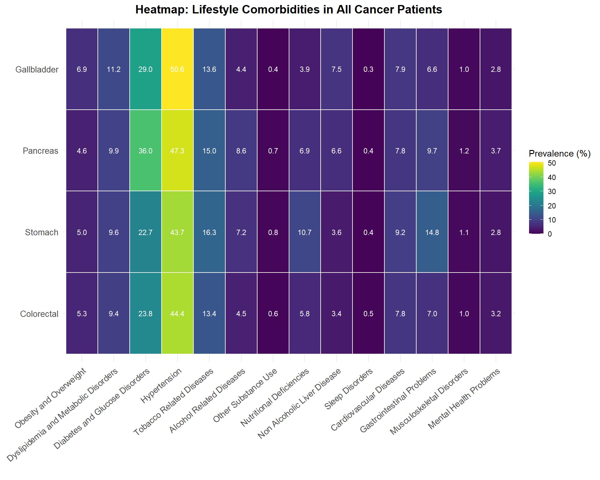
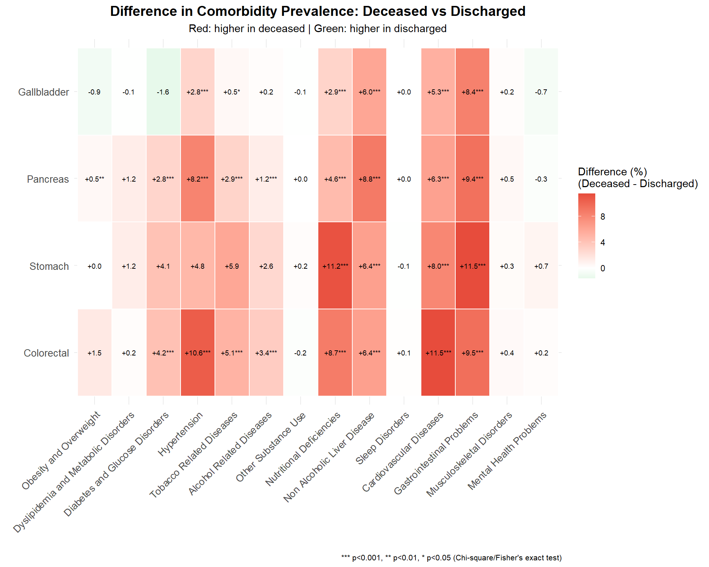
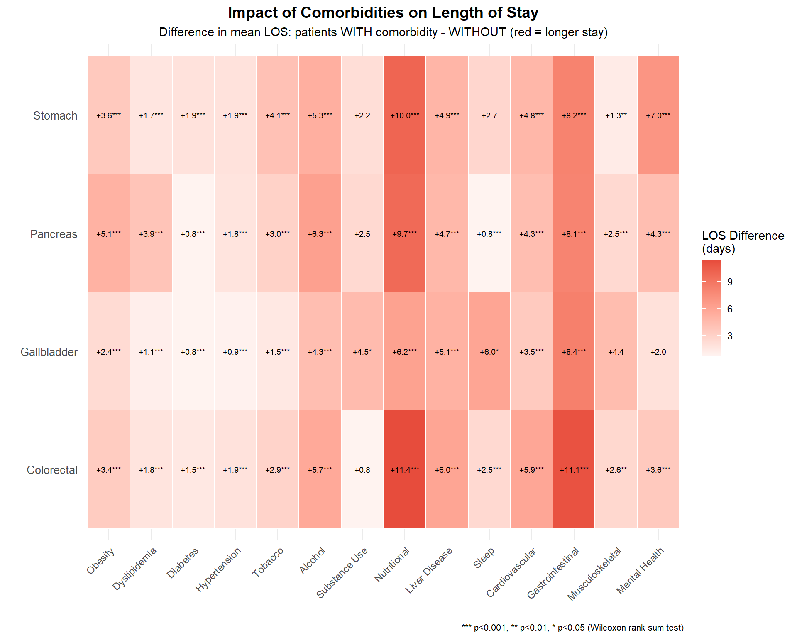
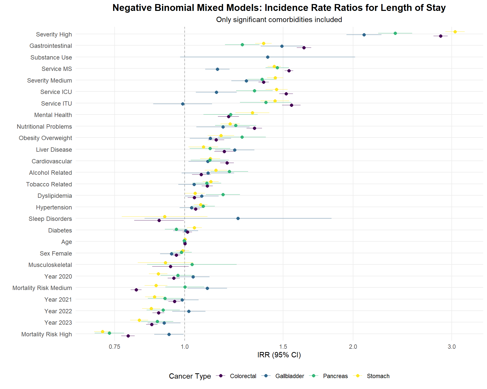
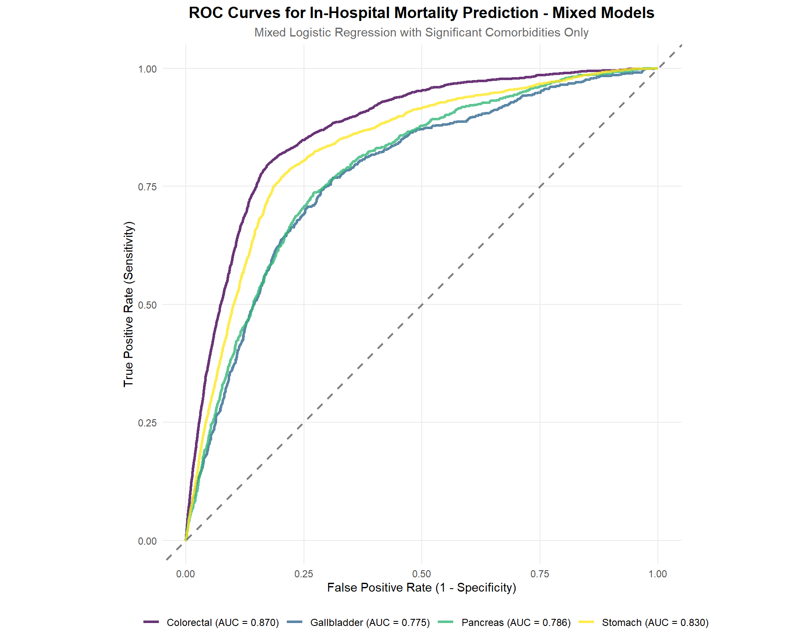
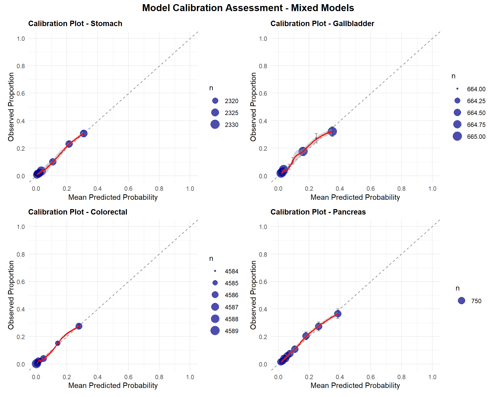

![]()
Código
# ==========================
# Load/Install packages
# ==========================
use_packages <- function(pkgs){
new_pkgs <- pkgs[!(pkgs %in% installed.packages()[,"Package"])]
if(length(new_pkgs)) install.packages(new_pkgs, dependencies = TRUE)
invisible(lapply(pkgs, library, character.only = TRUE))
}
# Lista completa de paquetes necesarios desde el inicio
# IMPORTANTE: MASS se carga antes de tidyverse para evitar conflictos con select()
use_packages(c(
"MASS", # Statistical functions (loaded first to avoid conflicts)
"tidyverse", # Data manipulation and ggplot2 (loaded after MASS)
"readxl", # Read Excel files
"knitr", # Report generation
"kableExtra", # Table formatting
"lubridate", # Date handling
"htmltools", # HTML tools
"viridis", # Color palettes
"reshape2", # Data reshaping
"glmmTMB", # Mixed models
"lme4", # Linear mixed effects
"pROC", # ROC curves
"caret", # Machine learning
"ResourceSelection", # Hosmer-Lemeshow test
"car", # Regression diagnostics
"patchwork" # Combine plots
))
Sys.setenv("VROOM_CONNECTION_SIZE" = 10000000000)
base_path <- gsub("/docs", "", getwd())
# Define output directory and file
output_dir <- file.path(base_path, "output_files")
output_file <- file.path(output_dir, "data_cancer_processed.rds")
# Create output directory if it doesn't exist
if (!dir.exists(output_dir)) {
dir.create(output_dir, recursive = TRUE)
}
# Check if processed data already exists
if (file.exists(output_file)) {
# Load existing data
data_cancer <- readRDS(output_file)
} else {
# Create new database
# ==========================
# Load and prepare data from 2019-2023
# ==========================
years <- 2019:2023
all_data <- list()
for (year in years) {
file_pattern <- paste0("GRD_PUBLICO_.*", year, ".*\\.csv$")
file_path <- list.files(
file.path(base_path, "data"),
pattern = file_pattern,
full.names = TRUE
)
if (length(file_path) > 0) {
year_data <- readr::read_delim(
file_path, delim = "|", escape_double = FALSE,
col_types = cols(.default = col_character(),
IR_29301_COD_GRD = col_number()),
trim_ws = TRUE,
progress = FALSE
)
year_data$year <- year
all_data[[as.character(year)]] <- year_data
}
}
# Combine all years into single dataframe
data_all_years <- bind_rows(all_data)
# Clean up memory
rm(all_data)
# ==========================
# Load catalogs
# ==========================
codigos_grd <- readxl::read_excel(file.path(base_path, "data/códigos grd.xlsx"), sheet = "IR - GRD") |>
`colnames<-`(c("IR_29301_COD_GRD", "COD_GRD_CAT"))
codigos_hosp <- readxl::read_excel(file.path(base_path, "data/códigos grd.xlsx"), sheet = "Hospitales") |>
`colnames<-`(c("COD_HOSPITAL", "COD_HOSPITAL_CAT")) |>
mutate(COD_HOSPITAL = as.character(COD_HOSPITAL))
codigos_pab <- readxl::read_excel(file.path(base_path, "data/códigos grd.xlsx"), sheet = "Tipo de Pabellon") |>
`colnames<-`(c("USOSPABELLON", "COD_PABELLON_CAT")) |>
mutate(USOSPABELLON = as.character(USOSPABELLON))
# Join catalogs
data_all_years <- data_all_years |>
full_join(codigos_grd, by = "IR_29301_COD_GRD") |>
full_join(codigos_hosp, by = "COD_HOSPITAL") |>
full_join(codigos_pab, by = "USOSPABELLON")
# Clean up catalogs
rm(codigos_grd, codigos_hosp, codigos_pab)
# ==========================
# Filter patients with target cancers
# ==========================
icd_target_primary <- c("C16","C18","C19","C20","C23","C25")
all_diag_cols <- paste0("DIAGNOSTICO", 1:35)
all_diag_cols <- intersect(all_diag_cols, names(data_all_years))
# Normalize diagnostic fields
for(col in all_diag_cols){
data_all_years[[paste0(col, "_NORM")]] <- str_to_upper(str_trim(data_all_years[[col]]))
}
# Filter function
has_target_cancer <- function(row){
diag_values <- unlist(row)
diag_values <- diag_values[!is.na(diag_values) & diag_values != ""]
any(str_detect(diag_values, paste0("^(", paste(icd_target_primary, collapse = "|"), ")")))
}
# Apply filter
norm_cols <- paste0(all_diag_cols, "_NORM")
data_norm_subset <- data_all_years[, norm_cols]
has_cancer_vector <- apply(data_norm_subset, 1, has_target_cancer)
data_cancer <- data_all_years[has_cancer_vector, ] |>
dplyr::select(-ends_with("_NORM"))
# Clean up large intermediate objects
rm(data_all_years, data_norm_subset, has_cancer_vector, norm_cols)
# ==========================
# Calculate age and classify cancer site based on ALL diagnostic fields
# ==========================
# Function to determine cancer site from all diagnoses
determine_cancer_site <- function(row) {
diag_fields <- row[grep("^DIAGNOSTICO[0-9]+$", names(row))]
for (diag in diag_fields) {
if (!is.na(diag) && diag != "") {
diag_upper <- str_to_upper(str_trim(diag))
if (str_starts(diag_upper, "C16")) return("Stomach")
if (str_starts(diag_upper, "C18") | str_starts(diag_upper, "C19") | str_starts(diag_upper, "C20")) return("Colorectal")
if (str_starts(diag_upper, "C25")) return("Pancreas")
if (str_starts(diag_upper, "C23")) return("Gallbladder")
}
}
return("Other/Secondary")
}
# Determine which diagnostic position contains the cancer
determine_cancer_position <- function(row) {
for (i in 1:35) {
field_name <- paste0("DIAGNOSTICO", i)
if (field_name %in% names(row)) {
diag <- row[[field_name]]
if (!is.na(diag) && diag != "") {
diag_upper <- str_to_upper(str_trim(diag))
if (str_starts(diag_upper, "C16") |
str_starts(diag_upper, "C18") |
str_starts(diag_upper, "C19") |
str_starts(diag_upper, "C20") |
str_starts(diag_upper, "C23") |
str_starts(diag_upper, "C25")) {
return(i)
}
}
}
}
return(NA)
}
data_cancer <- data_cancer |>
mutate(
cancer_site = apply(data_cancer, 1, determine_cancer_site),
diagnostic_position = apply(data_cancer, 1, determine_cancer_position),
# Handle different date formats by year
# Birth date always in DD-MM-YYYY format
FECHA_NACIMIENTO = as.Date(FECHA_NACIMIENTO, format = "%Y-%m-%d"),
# Admission and discharge dates: YYYY-MM-DD for 2019-2022, DD-MM-YYYY for 2023
FECHA_INGRESO = if_else(
year == 2023,
as.Date(FECHA_INGRESO, format = "%d-%m-%Y"),
as.Date(FECHA_INGRESO, format = "%Y-%m-%d")
),
FECHAALTA = if_else(
year == 2023,
as.Date(FECHAALTA, format = "%d-%m-%Y"),
as.Date(FECHAALTA, format = "%Y-%m-%d")
),
EDAD = round(as.numeric(difftime(FECHA_INGRESO, FECHA_NACIMIENTO, units = "days")) / 365.25, 0),
length_of_stay = as.numeric(difftime(FECHAALTA, FECHA_INGRESO, units = "days")),
# Factor variables for severity and mortality risk
IR_29301_SEVERIDAD = factor(IR_29301_SEVERIDAD,
levels = c("1", "2", "3"),
labels = c("Low", "Medium", "High")),
IR_29301_MORTALIDAD = factor(IR_29301_MORTALIDAD,
levels = c("1", "2", "3"),
labels = c("Low risk", "Medium risk", "High risk")),
# Classify admission services
service_category = case_when(
str_detect(SERVICIOINGRESO, "UNIDAD DE CUIDADOS INTENSIVOS|CUIDADOS") ~ "ICU",
str_detect(SERVICIOINGRESO, "UNIDAD DE TRATAMIENTO INTERMEDIO|UTI") ~ "ITU",
str_detect(SERVICIOINGRESO, "AGUDOS|CIRUGÍA|RECUPERACIÓN|MEDICO-QUIRURGICO|MÉDICO QUIRÚRGICO|MQ PEDIATRIA|MEDICO QUIRÚRGICOS") ~ "MS",
TRUE ~ "Others"
),
# Set Others as reference category
service_category = factor(service_category, levels = c("Others", "ICU", "ITU", "MS"))
) |>
filter(cancer_site != "Other/Secondary") |>
filter(SEXO != "DESCONOCIDO")
# ==========================
# Define comorbidity groups
# ==========================
icd3_norm <- function(x){
x <- stringr::str_to_upper(stringr::str_trim(x))
x <- stringr::str_replace_all(x, "\\.", "")
stringr::str_sub(x, 1, 3)
}
life_groups <- list(
obesity_overweight = c("E66", "E65", "E67", "E68", "R63", "Z68"),
dyslipidemia_metabolic = c("E78", "E79", "E88"),
diabetes_glucose = c("E10", "E11", "E12", "E13", "E14", "E09", "R73", "E08"),
hypertension = c("I10", "I11", "I12", "I13", "I15", "I16", "I27"),
tobacco_related = c("F17", "Z72", "Z87", "J44", "J43", "J41", "J42", "J47", "J40", "J98"),
alcohol_related = c("F10", "K70", "K29", "G31", "G62", "G72", "I42", "K86", "E24", "E52", "T51", "Y90", "Y91"),
substance_use = c("F11", "F12", "F13", "F14", "F15", "F16", "F18", "F19", "F55"),
nutritional_problems = c("E40", "E41", "E42", "E43", "E44", "E45", "E46", "E50", "E51", "E52", "E53",
"E54", "E55", "E56", "E58", "E59", "E60", "E61", "E63", "E64",
"D50", "D51", "D52", "D53"),
liver_disease_nonalcoholic = c("K76", "K72", "K73", "K74", "K75", "K77"),
sleep_disorders = c("G47", "F51", "G25"),
cardiovascular_lifestyle = c("I20", "I21", "I22", "I23", "I24", "I25", "I50", "I51",
"I64", "I65", "I66", "I67", "I70", "I73", "I77", "I78"),
gastrointestinal_lifestyle = c("K21", "K22", "K25", "K26", "K27", "K28", "K29", "K30",
"K31", "K58", "K59", "K90", "K91", "K92"),
musculoskeletal_sedentary = c("M79", "M81", "M80", "M85", "M62", "M25", "M54"),
mental_health_lifestyle = c("F32", "F33", "F34", "F41", "F43", "F48", "F50", "F54")
)
# Create normalized ICD-10 columns
comorb_cols <- paste0("DIAGNOSTICO", 2:35)
comorb_cols <- intersect(comorb_cols, names(data_cancer))
for(col in comorb_cols){
data_cancer[[paste0(col, "_C3")]] <- icd3_norm(data_cancer[[col]])
}
# Create comorbidity dummy variables
c3_cols <- paste0(comorb_cols, "_C3")
has_comorbidity <- function(row_codes, target_codes){
any(row_codes %in% target_codes, na.rm = TRUE)
}
for(group_name in names(life_groups)){
target_codes <- life_groups[[group_name]]
data_cancer[[group_name]] <- apply(
data_cancer[, c3_cols],
1,
function(x) as.integer(has_comorbidity(x, target_codes))
)
}
# Summary variables
dummy_vars <- names(life_groups)
data_cancer$n_lifestyle_comorb <- rowSums(data_cancer[, dummy_vars], na.rm = TRUE)
# Clean up intermediate columns
data_cancer <- data_cancer |>
dplyr::select(-ends_with("_C3"))
# Add estado_alta variable
data_cancer <- data_cancer |>
mutate(
estado_alta = case_when(
TIPOALTA == "FALLECIDO" ~ "Deceased",
TIPOALTA %in% c("DOMICILIO", "ALTA VOLUNTARIA", "HOSPITALIZACIÓN DOMICILIARIA",
"DERIVACIÓN OTRO HOSPITAL DEL SERVICIO",
"DERIVACIÓN OTRO HOSPITAL DE LA RED NACIONAL",
"DERIVACIÓN INST. PRIVADA (COMPRA DE SERVICIOS",
"DERIVACIÓN INST. PRIVADA (VOLUNTARIO)",
"DERIVACIÓN A OTROS CENTROS (CÁRCEL, HOGAR DE") ~ "Discharged",
TRUE ~ "Other"
)
)
# ==========================
# Save processed data
# ==========================
saveRDS(data_cancer, output_file)
}
# ==========================
# Function to create comorbidity prevalence table
# ==========================
create_comorbidity_table <- function(data, group_var = "cancer_site") {
data |>
group_by(!!sym(group_var)) |>
summarise(
N = n(),
`Obesity and Overweight` = round(mean(obesity_overweight) * 100, 1),
`Dyslipidemia and Metabolic Disorders` = round(mean(dyslipidemia_metabolic) * 100, 1),
`Diabetes and Glucose Disorders` = round(mean(diabetes_glucose) * 100, 1),
`Hypertension` = round(mean(hypertension) * 100, 1),
`Tobacco Related Diseases` = round(mean(tobacco_related) * 100, 1),
`Alcohol Related Diseases` = round(mean(alcohol_related) * 100, 1),
`Other Substance Use` = round(mean(substance_use) * 100, 1),
`Nutritional Deficiencies` = round(mean(nutritional_problems) * 100, 1),
`Non Alcoholic Liver Disease` = round(mean(liver_disease_nonalcoholic) * 100, 1),
`Sleep Disorders` = round(mean(sleep_disorders) * 100, 1),
`Cardiovascular Diseases` = round(mean(cardiovascular_lifestyle) * 100, 1),
`Gastrointestinal Problems` = round(mean(gastrointestinal_lifestyle) * 100, 1),
`Musculoskeletal Disorders` = round(mean(musculoskeletal_sedentary) * 100, 1),
`Mental Health Problems` = round(mean(mental_health_lifestyle) * 100, 1),
`Any Lifestyle Comorbidity (%)` = round(mean(n_lifestyle_comorb > 0) * 100, 1),
`Mean Number of Comorbidities` = round(mean(n_lifestyle_comorb), 2),
.groups = "drop"
) |>
arrange(desc(N))
}
# ==========================
# Function to create heatmap
# ==========================
create_heatmap <- function(table_data, title, subtitle = NULL, viridis_option = "D") {
heatmap_data <- table_data |>
dplyr::select(-contains("Patients"), -contains("Comorbidity"), -contains("Number")) |>
column_to_rownames("Cancer Site") |>
as.matrix()
heatmap_long <- melt(heatmap_data)
names(heatmap_long) <- c("Cancer Site", "Comorbidity", "Prevalence")
ggplot(heatmap_long, aes(x = Comorbidity, y = `Cancer Site`, fill = Prevalence)) +
geom_tile(color = "white", size = 0.5) +
scale_fill_viridis(name = "Prevalence (%)",
option = viridis_option,
limits = c(0, max(heatmap_long$Prevalence))) +
theme_minimal() +
theme(axis.text.x = element_text(angle = 40, hjust = 1, size = 10),
axis.text.y = element_text(size = 10),
plot.title = element_text(size = 14, face = "bold", hjust = 0.5),
plot.subtitle = element_text(size = 11, hjust = 0.5),
legend.position = "right") +
labs(title = title, subtitle = subtitle, x = "", y = "") +
geom_text(aes(label = sprintf("%.1f", Prevalence)),
color = "white", size = 3)
}
# ==========================
# P-VALUE CALCULATIONS
# ==========================
# Function to calculate p-values for mortality differences
calculate_mortality_pvalues <- function(data) {
cancer_sites <- unique(data$cancer_site)
comorbidities <- c("obesity_overweight", "dyslipidemia_metabolic", "diabetes_glucose",
"hypertension", "tobacco_related", "alcohol_related",
"substance_use", "nutritional_problems", "liver_disease_nonalcoholic",
"sleep_disorders", "cardiovascular_lifestyle", "gastrointestinal_lifestyle",
"musculoskeletal_sedentary", "mental_health_lifestyle")
p_matrix <- matrix(NA, nrow = length(cancer_sites), ncol = length(comorbidities))
rownames(p_matrix) <- cancer_sites
colnames(p_matrix) <- comorbidities
for(i in 1:length(cancer_sites)) {
for(j in 1:length(comorbidities)) {
subset_data <- data[data$cancer_site == cancer_sites[i], ]
mortality_table <- table(
subset_data[[comorbidities[j]]],
subset_data$estado_alta == "Deceased"
)
if(min(mortality_table) < 5 || sum(mortality_table) < 100) {
test_result <- suppressWarnings(fisher.test(mortality_table))
} else {
test_result <- suppressWarnings(chisq.test(mortality_table))
}
p_matrix[i, j] <- test_result$p.value
}
}
return(p_matrix)
}
# Function to calculate p-values for LOS differences
calculate_los_pvalues <- function(data) {
cancer_sites <- unique(data$cancer_site)
comorbidities <- c("obesity_overweight", "dyslipidemia_metabolic", "diabetes_glucose",
"hypertension", "tobacco_related", "alcohol_related",
"substance_use", "nutritional_problems", "liver_disease_nonalcoholic",
"sleep_disorders", "cardiovascular_lifestyle", "gastrointestinal_lifestyle",
"musculoskeletal_sedentary", "mental_health_lifestyle")
p_matrix <- matrix(NA, nrow = length(cancer_sites), ncol = length(comorbidities))
rownames(p_matrix) <- cancer_sites
colnames(p_matrix) <- comorbidities
for(i in 1:length(cancer_sites)) {
for(j in 1:length(comorbidities)) {
subset_data <- data[data$cancer_site == cancer_sites[i], ]
los_with <- subset_data$length_of_stay[subset_data[[comorbidities[j]]] == 1]
los_without <- subset_data$length_of_stay[subset_data[[comorbidities[j]]] == 0]
if(length(los_with) < 2 || length(los_without) < 2) {
p_matrix[i, j] <- NA
next
}
test_result <- suppressWarnings(wilcox.test(los_with, los_without))
p_matrix[i, j] <- test_result$p.value
}
}
return(p_matrix)
}
# ==========================
# Create all tables
# ==========================
# Table 0: Diagnostic position analysis
diagnostic_position_table <- data_cancer |>
mutate(position_group = case_when(
diagnostic_position == 1 ~ "Primary Diagnosis",
diagnostic_position %in% 2:5 ~ "Secondary Diagnoses (2-5)",
diagnostic_position %in% 6:10 ~ "Later Diagnoses (6-10)",
TRUE ~ "Very Late Diagnoses (11+)"
)) |>
group_by(position_group) |>
summarise(
`Total Cases` = n(),
`Percentage` = round(n() / nrow(data_cancer) * 100, 1),
`Mean Age` = round(mean(EDAD, na.rm = TRUE), 1),
`Female (%)` = round(mean(SEXO == "MUJER", na.rm = TRUE) * 100, 1),
`Mortality Rate (%)` = round(mean(estado_alta == "Deceased") * 100, 1),
`Mean LOS` = round(mean(length_of_stay, na.rm = TRUE), 1),
`Any Comorbidity (%)` = round(mean(n_lifestyle_comorb > 0) * 100, 1),
`Mean Comorbidities` = round(mean(n_lifestyle_comorb), 2)
)
# Table 1: Patient Distribution
tabla_distribucion <- data_cancer |>
group_by(cancer_site) |>
summarise(
`Total Patients` = n(),
`Discharged Alive` = sum(estado_alta == "Discharged"),
`Deceased` = sum(estado_alta == "Deceased"),
`Other Status` = sum(estado_alta == "Other"),
`Mortality Rate (%)` = round(sum(estado_alta == "Deceased") / n() * 100, 1),
`Mean Age (years)` = round(mean(EDAD, na.rm = TRUE), 1),
`Age Range` = paste(min(EDAD, na.rm = TRUE), "-", max(EDAD, na.rm = TRUE)),
`Female (%)` = round(mean(SEXO == "MUJER", na.rm = TRUE) * 100, 1),
`Mean LOS (days)` = round(mean(length_of_stay, na.rm = TRUE), 1),
`Median LOS (days)` = round(median(length_of_stay, na.rm = TRUE), 1),
`LOS Range` = paste(min(length_of_stay, na.rm = TRUE), "-", max(length_of_stay, na.rm = TRUE)),
`SD LOS` = round(sd(length_of_stay, na.rm = TRUE), 1)
) |>
arrange(desc(`Total Patients`)) |>
rename(`Cancer Site` = cancer_site)
# Table 2: Trends by Year
tabla_year <- data_cancer |>
group_by(year, cancer_site) |>
summarise(
`Total Patients` = n(),
`Mortality Rate (%)` = round(sum(estado_alta == "Deceased") / n() * 100, 1),
`Mean Age` = round(mean(EDAD, na.rm = TRUE), 1),
`Mean LOS` = round(mean(length_of_stay, na.rm = TRUE), 1),
`Any Comorbidity (%)` = round(mean(n_lifestyle_comorb > 0) * 100, 1),
.groups = "drop"
) |>
rename(`Year` = year, `Cancer Site` = cancer_site)
# Tables 3-5: Comorbidity tables
tabla_total <- create_comorbidity_table(data_cancer) |>
rename(`Cancer Site` = cancer_site, `Total Patients` = N)
tabla_alta <- create_comorbidity_table(
filter(data_cancer, estado_alta == "Discharged")
) |>
rename(`Cancer Site` = cancer_site, `Discharged Patients` = N)
tabla_fallecidos <- create_comorbidity_table(
filter(data_cancer, estado_alta == "Deceased")
) |>
rename(`Cancer Site` = cancer_site, `Deceased Patients` = N)
# Table 6: Summary by discharge status
summary_stats <- data_cancer |>
filter(estado_alta %in% c("Discharged", "Deceased")) |>
group_by(`Discharge Status` = estado_alta) |>
summarise(
`Total Patients` = n(),
`Mean Age` = round(mean(EDAD, na.rm = TRUE), 1),
`Female (%)` = round(mean(SEXO == "MUJER", na.rm = TRUE) * 100, 1),
`Mean LOS (days)` = round(mean(length_of_stay, na.rm = TRUE), 1),
`Median LOS (days)` = round(median(length_of_stay, na.rm = TRUE), 1),
`SD LOS` = round(sd(length_of_stay, na.rm = TRUE), 1),
`Any Lifestyle Comorbidity (%)` = round(mean(n_lifestyle_comorb > 0) * 100, 1),
`Mean Comorbidities` = round(mean(n_lifestyle_comorb), 2),
`Patients with 3+ Comorbidities (%)` = round(mean(n_lifestyle_comorb >= 3) * 100, 1)
)
# Table 7: LOS analysis
los_analysis <- data_cancer |>
filter(estado_alta %in% c("Discharged", "Deceased")) |>
group_by(`Cancer Site` = cancer_site, `Discharge Status` = estado_alta) |>
summarise(
`N` = n(),
`Mean LOS` = round(mean(length_of_stay, na.rm = TRUE), 1),
`Median LOS` = round(median(length_of_stay, na.rm = TRUE), 1),
`IQR` = paste(round(quantile(length_of_stay, 0.25, na.rm = TRUE), 0),
"-",
round(quantile(length_of_stay, 0.75, na.rm = TRUE), 0)),
.groups = "drop"
)
# Table 8: Yearly trends
yearly_trends <- data_cancer |>
group_by(year) |>
summarise(
`Total Cases` = n(),
`Stomach` = sum(cancer_site == "Stomach"),
`Colorectal` = sum(cancer_site == "Colorectal"),
`Pancreas` = sum(cancer_site == "Pancreas"),
`Gallbladder` = sum(cancer_site == "Gallbladder"),
`Mortality Rate (%)` = round(mean(estado_alta == "Deceased") * 100, 1),
`Mean Age` = round(mean(EDAD, na.rm = TRUE), 1),
`Mean LOS` = round(mean(length_of_stay, na.rm = TRUE), 1),
`Any Comorbidity (%)` = round(mean(n_lifestyle_comorb > 0) * 100, 1),
.groups = "drop"
) |>
rename(`Year` = year)
# Table 9: Mean LOS by cancer site and comorbidities
los_comorbidity_table <- data_cancer |>
group_by(cancer_site) |>
summarise(
`Obesity and Overweight` = round(mean(length_of_stay[obesity_overweight == 1], na.rm = TRUE), 1),
`Dyslipidemia and Metabolic` = round(mean(length_of_stay[dyslipidemia_metabolic == 1], na.rm = TRUE), 1),
`Diabetes and Glucose` = round(mean(length_of_stay[diabetes_glucose == 1], na.rm = TRUE), 1),
`Hypertension` = round(mean(length_of_stay[hypertension == 1], na.rm = TRUE), 1),
`Tobacco Related` = round(mean(length_of_stay[tobacco_related == 1], na.rm = TRUE), 1),
`Alcohol Related` = round(mean(length_of_stay[alcohol_related == 1], na.rm = TRUE), 1),
`Other Substance Use` = round(mean(length_of_stay[substance_use == 1], na.rm = TRUE), 1),
`Nutritional Deficiencies` = round(mean(length_of_stay[nutritional_problems == 1], na.rm = TRUE), 1),
`Non Alcoholic Liver` = round(mean(length_of_stay[liver_disease_nonalcoholic == 1], na.rm = TRUE), 1),
`Sleep Disorders` = round(mean(length_of_stay[sleep_disorders == 1], na.rm = TRUE), 1),
`Cardiovascular` = round(mean(length_of_stay[cardiovascular_lifestyle == 1], na.rm = TRUE), 1),
`Gastrointestinal` = round(mean(length_of_stay[gastrointestinal_lifestyle == 1], na.rm = TRUE), 1),
`Musculoskeletal` = round(mean(length_of_stay[musculoskeletal_sedentary == 1], na.rm = TRUE), 1),
`Mental Health` = round(mean(length_of_stay[mental_health_lifestyle == 1], na.rm = TRUE), 1),
.groups = "drop"
) |>
rename(`Cancer Site` = cancer_site)
# Table 10: LOS difference table
los_diff_table <- data_cancer |>
group_by(cancer_site) |>
summarise(
`Obesity` = round(mean(length_of_stay[obesity_overweight == 1], na.rm = TRUE) -
mean(length_of_stay[obesity_overweight == 0], na.rm = TRUE), 1),
`Dyslipidemia` = round(mean(length_of_stay[dyslipidemia_metabolic == 1], na.rm = TRUE) -
mean(length_of_stay[dyslipidemia_metabolic == 0], na.rm = TRUE), 1),
`Diabetes` = round(mean(length_of_stay[diabetes_glucose == 1], na.rm = TRUE) -
mean(length_of_stay[diabetes_glucose == 0], na.rm = TRUE), 1),
`Hypertension` = round(mean(length_of_stay[hypertension == 1], na.rm = TRUE) -
mean(length_of_stay[hypertension == 0], na.rm = TRUE), 1),
`Tobacco` = round(mean(length_of_stay[tobacco_related == 1], na.rm = TRUE) -
mean(length_of_stay[tobacco_related == 0], na.rm = TRUE), 1),
`Alcohol` = round(mean(length_of_stay[alcohol_related == 1], na.rm = TRUE) -
mean(length_of_stay[alcohol_related == 0], na.rm = TRUE), 1),
`Substance Use` = round(mean(length_of_stay[substance_use == 1], na.rm = TRUE) -
mean(length_of_stay[substance_use == 0], na.rm = TRUE), 1),
`Nutritional` = round(mean(length_of_stay[nutritional_problems == 1], na.rm = TRUE) -
mean(length_of_stay[nutritional_problems == 0], na.rm = TRUE), 1),
`Liver Disease` = round(mean(length_of_stay[liver_disease_nonalcoholic == 1], na.rm = TRUE) -
mean(length_of_stay[liver_disease_nonalcoholic == 0], na.rm = TRUE), 1),
`Sleep` = round(mean(length_of_stay[sleep_disorders == 1], na.rm = TRUE) -
mean(length_of_stay[sleep_disorders == 0], na.rm = TRUE), 1),
`Cardiovascular` = round(mean(length_of_stay[cardiovascular_lifestyle == 1], na.rm = TRUE) -
mean(length_of_stay[cardiovascular_lifestyle == 0], na.rm = TRUE), 1),
`Gastrointestinal` = round(mean(length_of_stay[gastrointestinal_lifestyle == 1], na.rm = TRUE) -
mean(length_of_stay[gastrointestinal_lifestyle == 0], na.rm = TRUE), 1),
`Musculoskeletal` = round(mean(length_of_stay[musculoskeletal_sedentary == 1], na.rm = TRUE) -
mean(length_of_stay[musculoskeletal_sedentary == 0], na.rm = TRUE), 1),
`Mental Health` = round(mean(length_of_stay[mental_health_lifestyle == 1], na.rm = TRUE) -
mean(length_of_stay[mental_health_lifestyle == 0], na.rm = TRUE), 1),
.groups = "drop"
) |>
rename(`Cancer Site` = cancer_site)
# Calculate p-values
mortality_pvalues <- calculate_mortality_pvalues(data_cancer)
los_pvalues <- calculate_los_pvalues(data_cancer)
# ==========================
# Display all tables with kable
# ==========================
# Table 0
diagnostic_position_table |>
kable(format = "html",
caption = "Table 0: Patient Characteristics by Cancer Diagnostic Position",
align = c('l', rep('c', ncol(diagnostic_position_table)-1))) |>
kable_styling(bootstrap_options = c("striped", "hover", "condensed"),
full_width = FALSE,
font_size = 11) |>
row_spec(0, bold = TRUE, color = "white", background = "#9b59b6") |>
column_spec(1, bold = TRUE)| position_group | Total Cases | Percentage | Mean Age | Female (%) | Mortality Rate (%) | Mean LOS | Any Comorbidity (%) | Mean Comorbidities |
|---|---|---|---|---|---|---|---|---|
| Later Diagnoses (6-10) | 4260 | 4.6 | 70.2 | 45.0 | 16.5 | 12.6 | 88.3 | 2.15 |
| Primary Diagnosis | 49953 | 53.6 | 65.9 | 45.9 | 6.2 | 9.9 | 69.2 | 1.45 |
| Secondary Diagnoses (2-5) | 37862 | 40.6 | 64.8 | 45.7 | 5.0 | 5.8 | 61.7 | 1.18 |
| Very Late Diagnoses (11+) | 1101 | 1.2 | 70.7 | 44.3 | 26.0 | 23.4 | 94.1 | 2.93 |
Código
# Table 1
tabla_distribucion |>
kable(format = "html",
caption = "Table 1: Patient Distribution by Cancer Site and Demographics (All Years: 2019-2023)",
align = c('l', rep('c', ncol(tabla_distribucion)-1))) |>
kable_styling(bootstrap_options = c("striped", "hover", "condensed"),
full_width = FALSE,
font_size = 11) |>
row_spec(0, bold = TRUE, color = "white", background = "#2c3e50") |>
column_spec(1, bold = TRUE)| Cancer Site | Total Patients | Discharged Alive | Deceased | Other Status | Mortality Rate (%) | Mean Age (years) | Age Range | Female (%) | Mean LOS (days) | Median LOS (days) | LOS Range | SD LOS |
|---|---|---|---|---|---|---|---|---|---|---|---|---|
| Colorectal | 51291 | 48769 | 2482 | 40 | 4.8 | 65.1 | 0 - 110 | 48.1 | 8.1 | 5 | 0 - 806 | 12.4 |
| Stomach | 26682 | 24813 | 1828 | 41 | 6.9 | 66.5 | 0 - 103 | 33.1 | 8.5 | 4 | 0 - 303 | 13.5 |
| Pancreas | 8266 | 7357 | 903 | 6 | 10.9 | 65.7 | 0 - 102 | 52.8 | 10.1 | 6 | 0 - 374 | 14.4 |
| Gallbladder | 6937 | 6193 | 736 | 8 | 10.6 | 66.6 | 0 - 101 | 68.9 | 9.3 | 6 | 0 - 179 | 11.0 |
Código
# Table 2
tabla_year |>
kable(format = "html",
caption = "Table 2: Trends by Year and Cancer Site",
align = c('l', rep('c', ncol(tabla_year)-1))) |>
kable_styling(bootstrap_options = c("striped", "hover", "condensed"),
full_width = FALSE,
font_size = 11) |>
row_spec(0, bold = TRUE, color = "white", background = "#8e44ad") |>
column_spec(1, bold = TRUE)| Year | Cancer Site | Total Patients | Mortality Rate (%) | Mean Age | Mean LOS | Any Comorbidity (%) |
|---|---|---|---|---|---|---|
| 2019 | Colorectal | 12609 | 4.0 | 64.6 | 7.0 | 60.1 |
| 2019 | Gallbladder | 1581 | 10.5 | 66.1 | 8.2 | 65.9 |
| 2019 | Pancreas | 1836 | 10.7 | 65.5 | 8.6 | 66.2 |
| 2019 | Stomach | 6562 | 5.9 | 66.2 | 8.0 | 64.7 |
| 2020 | Colorectal | 8197 | 5.5 | 64.7 | 8.3 | 63.5 |
| 2020 | Gallbladder | 1246 | 11.6 | 66.4 | 9.7 | 67.3 |
| 2020 | Pancreas | 1338 | 11.7 | 65.7 | 10.8 | 73.1 |
| 2020 | Stomach | 4478 | 8.3 | 66.1 | 8.7 | 66.1 |
| 2021 | Colorectal | 8515 | 5.2 | 65.1 | 8.7 | 65.8 |
| 2021 | Gallbladder | 1332 | 9.7 | 66.4 | 9.8 | 72.7 |
| 2021 | Pancreas | 1435 | 10.4 | 65.9 | 10.5 | 72.5 |
| 2021 | Stomach | 4604 | 7.7 | 66.1 | 8.6 | 68.2 |
| 2022 | Colorectal | 9973 | 5.3 | 65.8 | 8.5 | 68.2 |
| 2022 | Gallbladder | 1322 | 11.0 | 66.6 | 10.1 | 73.5 |
| 2022 | Pancreas | 1653 | 11.0 | 65.5 | 10.4 | 75.8 |
| 2022 | Stomach | 5204 | 7.1 | 67.0 | 9.1 | 73.0 |
| 2023 | Colorectal | 11997 | 4.6 | 65.5 | 8.2 | 68.1 |
| 2023 | Gallbladder | 1456 | 10.4 | 67.4 | 9.1 | 76.4 |
| 2023 | Pancreas | 2004 | 10.9 | 66.1 | 10.6 | 75.2 |
| 2023 | Stomach | 5834 | 6.0 | 67.2 | 8.4 | 73.1 |
Código
# Table 3
tabla_total |>
dplyr::select(-`Any Lifestyle Comorbidity (%)`, -`Mean Number of Comorbidities`) |>
kable(format = "html",
caption = "Table 3: Prevalence (%) of Lifestyle-Related Comorbidities - All Patients (2019-2023)",
align = c('l', rep('c', ncol(tabla_total)-3))) |>
kable_styling(bootstrap_options = c("striped", "hover", "condensed"),
full_width = FALSE,
font_size = 11) |>
row_spec(0, bold = TRUE, color = "white", background = "#34495e") |>
column_spec(1, bold = TRUE)| Cancer Site | Total Patients | Obesity and Overweight | Dyslipidemia and Metabolic Disorders | Diabetes and Glucose Disorders | Hypertension | Tobacco Related Diseases | Alcohol Related Diseases | Other Substance Use | Nutritional Deficiencies | Non Alcoholic Liver Disease | Sleep Disorders | Cardiovascular Diseases | Gastrointestinal Problems | Musculoskeletal Disorders | Mental Health Problems |
|---|---|---|---|---|---|---|---|---|---|---|---|---|---|---|---|
| Colorectal | 51291 | 5.3 | 9.4 | 23.8 | 44.4 | 13.4 | 4.5 | 0.6 | 5.8 | 3.4 | 0.5 | 7.8 | 7.0 | 1.0 | 3.2 |
| Stomach | 26682 | 5.0 | 9.6 | 22.7 | 43.7 | 16.3 | 7.2 | 0.8 | 10.7 | 3.6 | 0.4 | 9.2 | 14.8 | 1.1 | 2.8 |
| Pancreas | 8266 | 4.6 | 9.9 | 36.0 | 47.3 | 15.0 | 8.6 | 0.7 | 6.9 | 6.6 | 0.4 | 7.8 | 9.7 | 1.2 | 3.7 |
| Gallbladder | 6937 | 6.9 | 11.2 | 29.0 | 50.6 | 13.6 | 4.4 | 0.4 | 3.9 | 7.5 | 0.3 | 7.9 | 6.6 | 1.0 | 2.8 |
Código
# Table 4
tabla_alta |>
dplyr::select(-`Any Lifestyle Comorbidity (%)`, -`Mean Number of Comorbidities`) |>
kable(format = "html",
caption = "Table 4: Prevalence (%) of Lifestyle-Related Comorbidities - Discharged Patients",
align = c('l', rep('c', ncol(tabla_alta)-3))) |>
kable_styling(bootstrap_options = c("striped", "hover", "condensed"),
full_width = FALSE,
font_size = 11) |>
row_spec(0, bold = TRUE, color = "white", background = "#27ae60") |>
column_spec(1, bold = TRUE)| Cancer Site | Discharged Patients | Obesity and Overweight | Dyslipidemia and Metabolic Disorders | Diabetes and Glucose Disorders | Hypertension | Tobacco Related Diseases | Alcohol Related Diseases | Other Substance Use | Nutritional Deficiencies | Non Alcoholic Liver Disease | Sleep Disorders | Cardiovascular Diseases | Gastrointestinal Problems | Musculoskeletal Disorders | Mental Health Problems |
|---|---|---|---|---|---|---|---|---|---|---|---|---|---|---|---|
| Colorectal | 48769 | 5.3 | 9.4 | 23.6 | 43.9 | 13.1 | 4.3 | 0.6 | 5.4 | 3.1 | 0.5 | 7.2 | 6.6 | 1.0 | 3.2 |
| Stomach | 24813 | 5.0 | 9.5 | 22.4 | 43.4 | 15.8 | 7.0 | 0.7 | 9.9 | 3.2 | 0.4 | 8.7 | 13.9 | 1.0 | 2.7 |
| Pancreas | 7357 | 4.5 | 9.8 | 35.7 | 46.4 | 14.7 | 8.5 | 0.7 | 6.4 | 5.7 | 0.4 | 7.1 | 8.7 | 1.2 | 3.7 |
| Gallbladder | 6193 | 7.0 | 11.2 | 29.2 | 50.3 | 13.6 | 4.4 | 0.4 | 3.6 | 6.9 | 0.3 | 7.3 | 5.7 | 1.0 | 2.9 |
Código
# Table 5
tabla_fallecidos |>
dplyr::select(-`Any Lifestyle Comorbidity (%)`, -`Mean Number of Comorbidities`) |>
kable(format = "html",
caption = "Table 5: Prevalence (%) of Lifestyle-Related Comorbidities - Deceased Patients",
align = c('l', rep('c', ncol(tabla_fallecidos)-3))) |>
kable_styling(bootstrap_options = c("striped", "hover", "condensed"),
full_width = FALSE,
font_size = 11) |>
row_spec(0, bold = TRUE, color = "white", background = "#c0392b") |>
column_spec(1, bold = TRUE)| Cancer Site | Deceased Patients | Obesity and Overweight | Dyslipidemia and Metabolic Disorders | Diabetes and Glucose Disorders | Hypertension | Tobacco Related Diseases | Alcohol Related Diseases | Other Substance Use | Nutritional Deficiencies | Non Alcoholic Liver Disease | Sleep Disorders | Cardiovascular Diseases | Gastrointestinal Problems | Musculoskeletal Disorders | Mental Health Problems |
|---|---|---|---|---|---|---|---|---|---|---|---|---|---|---|---|
| Colorectal | 2482 | 6.8 | 9.6 | 27.8 | 54.5 | 18.2 | 7.7 | 0.4 | 14.1 | 9.5 | 0.6 | 18.7 | 16.1 | 1.4 | 3.4 |
| Stomach | 1828 | 5.0 | 10.7 | 26.5 | 48.2 | 21.7 | 9.6 | 0.9 | 21.1 | 9.6 | 0.3 | 16.7 | 25.4 | 1.3 | 3.4 |
| Pancreas | 903 | 5.0 | 11.0 | 38.5 | 54.6 | 17.6 | 9.7 | 0.7 | 11.0 | 14.5 | 0.4 | 13.4 | 18.1 | 1.7 | 3.4 |
| Gallbladder | 736 | 6.1 | 11.1 | 27.6 | 53.1 | 14.1 | 4.6 | 0.3 | 6.5 | 12.9 | 0.3 | 12.6 | 14.1 | 1.2 | 2.2 |
Código
# Table 6
summary_stats |>
kable(format = "html",
caption = "Table 6: Summary Statistics by Discharge Status (All Years: 2019-2023)",
align = c('l', rep('c', ncol(summary_stats)-1))) |>
kable_styling(bootstrap_options = c("striped", "hover", "condensed"),
full_width = FALSE,
font_size = 11) |>
row_spec(0, bold = TRUE, color = "white", background = "#34495e") |>
column_spec(1, bold = TRUE)| Discharge Status | Total Patients | Mean Age | Female (%) | Mean LOS (days) | Median LOS (days) | SD LOS | Any Lifestyle Comorbidity (%) | Mean Comorbidities | Patients with 3+ Comorbidities (%) |
|---|---|---|---|---|---|---|---|---|---|
| Deceased | 5949 | 70.6 | 45.1 | 14.1 | 8 | 19.0 | 80.9 | 1.91 | 31.3 |
| Discharged | 87132 | 65.4 | 45.8 | 8.1 | 5 | 12.2 | 66.3 | 1.35 | 18.3 |
Código
# Table 7
los_analysis |>
kable(format = "html",
caption = "Table 7: Length of Stay Analysis by Cancer Site and Discharge Status",
align = c('l', rep('c', ncol(los_analysis)-1))) |>
kable_styling(bootstrap_options = c("striped", "hover", "condensed"),
full_width = FALSE,
font_size = 11) |>
row_spec(0, bold = TRUE, color = "white", background = "#2c3e50") |>
column_spec(1, bold = TRUE)| Cancer Site | Discharge Status | N | Mean LOS | Median LOS | IQR |
|---|---|---|---|---|---|
| Colorectal | Deceased | 2482 | 14.3 | 8 | 3 - 19 |
| Colorectal | Discharged | 48769 | 7.8 | 5 | 2 - 9 |
| Gallbladder | Deceased | 736 | 11.5 | 7 | 3 - 16 |
| Gallbladder | Discharged | 6193 | 9.1 | 6 | 3 - 12 |
| Pancreas | Deceased | 903 | 13.4 | 8 | 3 - 17 |
| Pancreas | Discharged | 7357 | 9.7 | 6 | 2 - 13 |
| Stomach | Deceased | 1828 | 15.1 | 8 | 2 - 20 |
| Stomach | Discharged | 24813 | 8.1 | 4 | 1 - 10 |
Código
# Table 8
yearly_trends |>
kable(format = "html",
caption = "Table 8: Yearly Trends in Cancer Cases and Outcomes (2019-2023)",
align = c('l', rep('c', ncol(yearly_trends)-1))) |>
kable_styling(bootstrap_options = c("striped", "hover", "condensed"),
full_width = FALSE,
font_size = 11) |>
row_spec(0, bold = TRUE, color = "white", background = "#e67e22") |>
column_spec(1, bold = TRUE)| Year | Total Cases | Stomach | Colorectal | Pancreas | Gallbladder | Mortality Rate (%) | Mean Age | Mean LOS | Any Comorbidity (%) |
|---|---|---|---|---|---|---|---|---|---|
| 2019 | 22588 | 6562 | 12609 | 1836 | 1581 | 5.6 | 65.2 | 7.5 | 62.3 |
| 2020 | 15259 | 4478 | 8197 | 1338 | 1246 | 7.4 | 65.3 | 8.8 | 65.4 |
| 2021 | 15886 | 4604 | 8515 | 1435 | 1332 | 6.8 | 65.6 | 8.9 | 67.7 |
| 2022 | 18152 | 5204 | 9973 | 1653 | 1322 | 6.7 | 66.2 | 9.0 | 70.7 |
| 2023 | 21291 | 5834 | 11997 | 2004 | 1456 | 6.0 | 66.2 | 8.5 | 70.7 |
Código
# Table 9: Mean LOS by Cancer Site and Comorbidities
los_comorbidity_table |>
kable(format = "html",
caption = "Table 9: Mean Length of Stay (days) by Cancer Site and Comorbidity",
align = c('l', rep('c', ncol(los_comorbidity_table)-1))) |>
kable_styling(bootstrap_options = c("striped", "hover", "condensed"),
full_width = FALSE,
font_size = 10) |>
row_spec(0, bold = TRUE, color = "white", background = "#16a085") |>
column_spec(1, bold = TRUE)| Cancer Site | Obesity and Overweight | Dyslipidemia and Metabolic | Diabetes and Glucose | Hypertension | Tobacco Related | Alcohol Related | Other Substance Use | Nutritional Deficiencies | Non Alcoholic Liver | Sleep Disorders | Cardiovascular | Gastrointestinal | Musculoskeletal | Mental Health |
|---|---|---|---|---|---|---|---|---|---|---|---|---|---|---|
| Colorectal | 11.3 | 9.7 | 9.2 | 9.1 | 10.6 | 13.5 | 8.9 | 18.8 | 13.9 | 10.6 | 13.6 | 18.4 | 10.7 | 11.6 |
| Gallbladder | 11.5 | 10.3 | 9.9 | 9.8 | 10.6 | 13.4 | 13.8 | 15.3 | 14.0 | 15.3 | 12.6 | 17.2 | 13.7 | 11.3 |
| Pancreas | 15.0 | 13.7 | 10.7 | 11.1 | 12.7 | 15.9 | 12.6 | 19.2 | 14.5 | 10.9 | 14.1 | 17.4 | 12.6 | 14.3 |
| Stomach | 12.0 | 10.1 | 10.0 | 9.6 | 11.9 | 13.5 | 10.7 | 17.5 | 13.2 | 11.2 | 12.9 | 15.5 | 9.8 | 15.3 |
Código
# Table 10: LOS Difference by Comorbidity Presence
los_diff_table |>
kable(format = "html",
caption = "Table 10: Impact of Comorbidities on Length of Stay (Days difference: WITH - WITHOUT comorbidity)",
align = c('l', rep('c', ncol(los_diff_table)-1))) |>
kable_styling(bootstrap_options = c("striped", "hover", "condensed"),
full_width = FALSE,
font_size = 10) |>
row_spec(0, bold = TRUE, color = "white", background = "#8b4513") |>
column_spec(1, bold = TRUE)| Cancer Site | Obesity | Dyslipidemia | Diabetes | Hypertension | Tobacco | Alcohol | Substance Use | Nutritional | Liver Disease | Sleep | Cardiovascular | Gastrointestinal | Musculoskeletal | Mental Health |
|---|---|---|---|---|---|---|---|---|---|---|---|---|---|---|
| Colorectal | 3.4 | 1.8 | 1.5 | 1.9 | 2.9 | 5.7 | 0.8 | 11.4 | 6.0 | 2.5 | 5.9 | 11.1 | 2.6 | 3.6 |
| Gallbladder | 2.4 | 1.1 | 0.8 | 0.9 | 1.5 | 4.3 | 4.5 | 6.2 | 5.1 | 6.0 | 3.5 | 8.4 | 4.4 | 2.0 |
| Pancreas | 5.1 | 3.9 | 0.8 | 1.8 | 3.0 | 6.3 | 2.5 | 9.7 | 4.7 | 0.8 | 4.3 | 8.1 | 2.5 | 4.3 |
| Stomach | 3.6 | 1.7 | 1.9 | 1.9 | 4.1 | 5.3 | 2.2 | 10.0 | 4.9 | 2.7 | 4.8 | 8.2 | 1.3 | 7.0 |
Código
# ==========================
# Create visualizations
# ==========================
# Heatmaps
p1 <- create_heatmap(tabla_total,
"Heatmap: Lifestyle Comorbidities in All Cancer Patients",
viridis_option = "D")
p2 <- create_heatmap(tabla_alta,
"Heatmap: Lifestyle Comorbidities in Discharged Cancer Patients",
viridis_option = "C")
p3 <- create_heatmap(tabla_fallecidos,
"Heatmap: Lifestyle Comorbidities in Deceased Cancer Patients",
viridis_option = "C")
print(p1)
Código
print(p2)Código
print(p3)Código
# Enhanced heatmap for mortality differences with p-values
create_mortality_diff_heatmap_with_pvalues <- function(deceased_table, discharged_table, p_values) {
heatmap_deceased <- deceased_table |>
dplyr::select(-contains("Patients"), -contains("Comorbidity"), -contains("Number")) |>
column_to_rownames("Cancer Site") |>
as.matrix()
heatmap_discharged <- discharged_table |>
dplyr::select(-contains("Patients"), -contains("Comorbidity"), -contains("Number")) |>
column_to_rownames("Cancer Site") |>
as.matrix()
heatmap_diff <- heatmap_deceased - heatmap_discharged
p_values_formatted <- matrix("", nrow = nrow(p_values), ncol = ncol(p_values))
for(i in 1:nrow(p_values)) {
for(j in 1:ncol(p_values)) {
if(!is.na(p_values[i,j])) {
if(p_values[i,j] < 0.001) {
p_values_formatted[i,j] <- "***"
} else if(p_values[i,j] < 0.01) {
p_values_formatted[i,j] <- "**"
} else if(p_values[i,j] < 0.05) {
p_values_formatted[i,j] <- "*"
}
}
}
}
heatmap_diff_long <- melt(heatmap_diff)
names(heatmap_diff_long) <- c("Cancer Site", "Comorbidity", "Difference")
p_values_long <- melt(p_values_formatted)
heatmap_diff_long$significance <- p_values_long$value
ggplot(heatmap_diff_long, aes(x = Comorbidity, y = `Cancer Site`, fill = Difference)) +
geom_tile(color = "white", size = 0.5) +
scale_fill_gradient2(name = "Difference (%)\n(Deceased - Discharged)",
low = "#2ecc71", mid = "white", high = "#e74c3c",
midpoint = 0) +
geom_text(aes(label = paste0(sprintf("%+.1f", Difference), significance)),
color = "black", size = 2.5) +
theme_minimal() +
theme(axis.text.x = element_text(angle = 45, hjust = 1, size = 10),
axis.text.y = element_text(size = 10),
plot.title = element_text(size = 14, face = "bold", hjust = 0.5),
plot.subtitle = element_text(size = 11, hjust = 0.5),
plot.caption = element_text(size = 8, hjust = 1),
legend.position = "right") +
labs(title = "Difference in Comorbidity Prevalence: Deceased vs Discharged",
subtitle = "Red: higher in deceased | Green: higher in discharged",
caption = "*** p<0.001, ** p<0.01, * p<0.05 (Chi-square/Fisher's exact test)",
x = "", y = "")
}
# Enhanced heatmap for LOS differences with p-values
create_los_diff_heatmap_with_pvalues <- function(los_diff_table, p_values) {
los_diff_data <- los_diff_table |>
column_to_rownames("Cancer Site") |>
as.matrix()
los_diff_data[is.nan(los_diff_data)] <- NA
p_values_formatted <- matrix("", nrow = nrow(p_values), ncol = ncol(p_values))
for(i in 1:nrow(p_values)) {
for(j in 1:ncol(p_values)) {
if(!is.na(p_values[i,j])) {
if(p_values[i,j] < 0.001) {
p_values_formatted[i,j] <- "***"
} else if(p_values[i,j] < 0.01) {
p_values_formatted[i,j] <- "**"
} else if(p_values[i,j] < 0.05) {
p_values_formatted[i,j] <- "*"
}
}
}
}
los_diff_long <- melt(los_diff_data, na.rm = TRUE)
names(los_diff_long) <- c("Cancer Site", "Comorbidity", "LOS_Difference")
p_values_long <- melt(p_values_formatted)
los_diff_long$significance <- p_values_long$value[!is.na(los_diff_long$LOS_Difference)]
ggplot(los_diff_long, aes(x = Comorbidity, y = `Cancer Site`, fill = LOS_Difference)) +
geom_tile(color = "white", size = 0.5) +
scale_fill_gradient2(name = "LOS Difference\n(days)",
low = "#3498db", mid = "white", high = "#e74c3c",
midpoint = 0,
na.value = "grey90") +
geom_text(aes(label = paste0(sprintf("%+.1f", LOS_Difference), significance)),
color = "black", size = 2.5) +
theme_minimal() +
theme(axis.text.x = element_text(angle = 45, hjust = 1, size = 9),
axis.text.y = element_text(size = 10),
plot.title = element_text(size = 14, face = "bold", hjust = 0.5),
plot.subtitle = element_text(size = 11, hjust = 0.5),
plot.caption = element_text(size = 8, hjust = 1),
legend.position = "right") +
labs(title = "Impact of Comorbidities on Length of Stay",
subtitle = "Difference in mean LOS: patients WITH comorbidity - WITHOUT (red = longer stay)",
caption = "*** p<0.001, ** p<0.01, * p<0.05 (Wilcoxon rank-sum test)",
x = "", y = "")
}
p_mortality_diff <- create_mortality_diff_heatmap_with_pvalues(
tabla_fallecidos,
tabla_alta,
mortality_pvalues
)
p_los_diff <- create_los_diff_heatmap_with_pvalues(
los_diff_table,
los_pvalues
)
print(p_mortality_diff)
Código
print(p_los_diff)
Código
# Create heatmap for mean LOS by cancer and comorbidities
los_heatmap_data <- los_comorbidity_table |>
column_to_rownames("Cancer Site") |>
as.matrix()
los_heatmap_data[is.nan(los_heatmap_data)] <- NA
los_heatmap_long <- melt(los_heatmap_data, na.rm = TRUE)
names(los_heatmap_long) <- c("Cancer Site", "Comorbidity", "Mean_LOS")
p_los_heatmap <- ggplot(los_heatmap_long, aes(x = Comorbidity, y = `Cancer Site`, fill = Mean_LOS)) +
geom_tile(color = "white", size = 0.5) +
scale_fill_viridis(name = "Mean LOS\n(days)",
option = "A",
na.value = "grey90") +
theme_minimal() +
theme(axis.text.x = element_text(angle = 45, hjust = 1, size = 9),
axis.text.y = element_text(size = 10),
plot.title = element_text(size = 14, face = "bold", hjust = 0.5),
plot.subtitle = element_text(size = 11, hjust = 0.5),
legend.position = "right") +
labs(title = "Mean Length of Stay by Cancer Site and Comorbidity",
subtitle = "Days of hospitalization for patients with each comorbidity",
x = "", y = "") +
geom_text(aes(label = sprintf("%.1f", Mean_LOS)),
color = "white", size = 2.5)
print(p_los_heatmap)Código
# Trend plots
trend_plot <- data_cancer |>
group_by(year, cancer_site) |>
summarise(
count = n(),
mortality_rate = mean(estado_alta == "Deceased") * 100,
.groups = "drop"
)
p_trend <- ggplot(trend_plot, aes(x = year, y = count, color = cancer_site)) +
geom_line(size = 1.2) +
geom_point(size = 3) +
scale_color_viridis_d(option = "D") +
theme_minimal() +
theme(legend.position = "bottom",
plot.title = element_text(size = 14, face = "bold", hjust = 0.5)) +
labs(title = "Cancer Cases Trend by Site (2019-2023)",
x = "Year",
y = "Number of Cases",
color = "Cancer Site")
print(p_trend)Código
p_mortality <- ggplot(trend_plot, aes(x = year, y = mortality_rate, color = cancer_site)) +
geom_line(size = 1.2) +
geom_point(size = 3) +
scale_color_viridis_d(option = "D") +
theme_minimal() +
theme(legend.position = "bottom",
plot.title = element_text(size = 14, face = "bold", hjust = 0.5)) +
labs(title = "Mortality Rate Trend by Cancer Site (2019-2023)",
x = "Year",
y = "Mortality Rate (%)",
color = "Cancer Site")
print(p_mortality)Código
# ==========================
# MODELS SECTION
# ==========================
# Prepare data for modeling
data_cancer <- data_cancer |>
mutate(
egresar_fallecido = ifelse(estado_alta == "Deceased", 1, 0),
year_factor = factor(year, levels = c(2019, 2020, 2021, 2022, 2023)),
IR_29301_SEVERIDAD = factor(IR_29301_SEVERIDAD, levels = c("Low", "Medium", "High")),
IR_29301_MORTALIDAD = factor(IR_29301_MORTALIDAD, levels = c("Low risk", "Medium risk", "High risk"))
)
# Identify significant comorbidities
identify_significant_comorbidities <- function(p_matrix, threshold = 0.05) {
sig_vars <- list()
for(cancer in rownames(p_matrix)) {
sig_indices <- which(p_matrix[cancer, ] < threshold)
if(length(sig_indices) > 0) {
sig_vars[[cancer]] <- colnames(p_matrix)[sig_indices]
} else {
sig_vars[[cancer]] <- character(0)
}
}
return(sig_vars)
}
sig_mortality_vars <- identify_significant_comorbidities(mortality_pvalues, 0.05)
sig_los_vars <- identify_significant_comorbidities(los_pvalues, 0.05)
# Create datasets for each cancer type
cancer_types <- unique(data_cancer$cancer_site)
datasets <- list()
for(cancer in cancer_types) {
datasets[[cancer]] <- data_cancer |>
filter(cancer_site == cancer) |>
filter(complete.cases(EDAD, SEXO, service_category, year_factor, length_of_stay,
IR_29301_SEVERIDAD, IR_29301_MORTALIDAD))
}
# Function to clean variable names
clean_var_names <- function(var_names) {
var_names <- gsub("\\(Intercept\\)", "Intercept", var_names)
var_names <- gsub("SEXOMUJER", "Sex Female", var_names)
var_names <- gsub("EDAD", "Age", var_names)
var_names <- gsub("service_categoryICU", "Service ICU", var_names)
var_names <- gsub("service_categoryITU", "Service ITU", var_names)
var_names <- gsub("service_categoryMS", "Service MS", var_names)
var_names <- gsub("service_categoryOthers", "Service Others", var_names)
var_names <- gsub("year_factor", "Year ", var_names)
var_names <- gsub("IR_29301_SEVERIDADMedium", "Severity Medium", var_names)
var_names <- gsub("IR_29301_SEVERIDADHigh", "Severity High", var_names)
var_names <- gsub("IR_29301_MORTALIDADMedium risk", "Mortality Risk Medium", var_names)
var_names <- gsub("IR_29301_MORTALIDADHigh risk", "Mortality Risk High", var_names)
var_names <- gsub("obesity_overweight", "Obesity Overweight", var_names)
var_names <- gsub("dyslipidemia_metabolic", "Dyslipidemia", var_names)
var_names <- gsub("diabetes_glucose", "Diabetes", var_names)
var_names <- gsub("hypertension", "Hypertension", var_names)
var_names <- gsub("tobacco_related", "Tobacco Related", var_names)
var_names <- gsub("alcohol_related", "Alcohol Related", var_names)
var_names <- gsub("substance_use", "Substance Use", var_names)
var_names <- gsub("nutritional_problems", "Nutritional Problems", var_names)
var_names <- gsub("liver_disease_nonalcoholic", "Liver Disease", var_names)
var_names <- gsub("sleep_disorders", "Sleep Disorders", var_names)
var_names <- gsub("cardiovascular_lifestyle", "Cardiovascular", var_names)
var_names <- gsub("gastrointestinal_lifestyle", "Gastrointestinal", var_names)
var_names <- gsub("musculoskeletal_sedentary", "Musculoskeletal", var_names)
var_names <- gsub("mental_health_lifestyle", "Mental Health", var_names)
return(var_names)
}
# Function to format effects
format_effect <- function(estimate, ci_lower, ci_upper, p_value) {
stars <- ifelse(p_value < 0.001, "***",
ifelse(p_value < 0.01, "**",
ifelse(p_value < 0.05, "*", "")))
sprintf("%.3f [%.3f, %.3f]%s", estimate, ci_lower, ci_upper, stars)
}
# REFINED MODELS
logistic_models_refined <- list()
logistic_results_refined <- list()
logistic_performance_refined <- list()
for(cancer in cancer_types) {
tryCatch({
base_vars <- c("EDAD", "SEXO", "service_category", "year_factor",
"IR_29301_SEVERIDAD", "IR_29301_MORTALIDAD")
model_vars <- base_vars
if(cancer %in% names(sig_mortality_vars) && length(sig_mortality_vars[[cancer]]) > 0) {
model_vars <- c(model_vars, sig_mortality_vars[[cancer]])
}
formula_text <- paste("egresar_fallecido ~", paste(model_vars, collapse = " + "), "+ (1|year_factor)")
model_formula <- as.formula(formula_text)
model <- suppressWarnings(glmer(
model_formula,
data = datasets[[cancer]],
family = binomial(link = "logit"),
control = glmerControl(optimizer = "bobyqa", optCtrl = list(maxfun = 100000))
))
logistic_models_refined[[cancer]] <- model
fixed_effects <- summary(model)$coefficients
results_df <- data.frame(
Variable = rownames(fixed_effects),
Coefficient = fixed_effects[, "Estimate"],
SE = fixed_effects[, "Std. Error"],
OR = exp(fixed_effects[, "Estimate"]),
CI_Lower = exp(fixed_effects[, "Estimate"] - 1.96 * fixed_effects[, "Std. Error"]),
CI_Upper = exp(fixed_effects[, "Estimate"] + 1.96 * fixed_effects[, "Std. Error"]),
z_value = fixed_effects[, "z value"],
P_Value = fixed_effects[, "Pr(>|z|)"]
)
logistic_results_refined[[cancer]] <- results_df
pred_probs <- predict(model, type = "response", re.form = NA)
observed <- datasets[[cancer]]$egresar_fallecido
roc_obj <- roc(observed, pred_probs, quiet = TRUE)
auc_val <- as.numeric(auc(roc_obj))
null_model <- glm(egresar_fallecido ~ 1, data = datasets[[cancer]], family = binomial)
ll_full <- as.numeric(logLik(model))
ll_null <- as.numeric(logLik(null_model))
n <- nobs(model)
mcfadden <- 1 - (ll_full / ll_null)
cox_snell <- 1 - exp((2/n) * (ll_null - ll_full))
nagelkerke <- cox_snell / (1 - exp(2 * ll_null / n))
logistic_performance_refined[[cancer]] <- data.frame(
Cancer = cancer,
N = n,
Events = sum(observed),
EventRate = mean(observed) * 100,
N_Comorbidities = length(sig_mortality_vars[[cancer]]),
AIC = AIC(model),
BIC = BIC(model),
LogLik = ll_full,
AUC = auc_val,
McFadden = mcfadden,
CoxSnell = cox_snell,
Nagelkerke = nagelkerke
)
}, error = function(e) {
# Silent error handling
})
}
nb_models_refined <- list()
nb_results_refined <- list()
nb_performance_refined <- list()
for(cancer in cancer_types) {
tryCatch({
base_vars <- c("EDAD", "SEXO", "service_category", "year_factor",
"IR_29301_SEVERIDAD", "IR_29301_MORTALIDAD")
model_vars <- base_vars
if(cancer %in% names(sig_los_vars) && length(sig_los_vars[[cancer]]) > 0) {
model_vars <- c(model_vars, sig_los_vars[[cancer]])
}
formula_text <- paste("length_of_stay ~", paste(model_vars, collapse = " + "), "+ (1|year_factor)")
model_formula <- as.formula(formula_text)
model <- suppressWarnings(glmmTMB(
model_formula,
data = datasets[[cancer]],
family = nbinom2,
control = glmmTMBControl(optimizer = nlminb, optCtrl = list(eval.max = 1000, iter.max = 1000))
))
nb_models_refined[[cancer]] <- model
fixed_effects <- summary(model)$coefficients$cond
results_df <- data.frame(
Variable = rownames(fixed_effects),
Coefficient = fixed_effects[, "Estimate"],
SE = fixed_effects[, "Std. Error"],
IRR = exp(fixed_effects[, "Estimate"]),
CI_Lower = exp(fixed_effects[, "Estimate"] - 1.96 * fixed_effects[, "Std. Error"]),
CI_Upper = exp(fixed_effects[, "Estimate"] + 1.96 * fixed_effects[, "Std. Error"]),
z_value = fixed_effects[, "z value"],
P_Value = fixed_effects[, "Pr(>|z|)"]
)
nb_results_refined[[cancer]] <- results_df
fitted_vals <- fitted(model)
observed_vals <- datasets[[cancer]]$length_of_stay
residuals <- observed_vals - fitted_vals
null_model <- glm(length_of_stay ~ 1, data = datasets[[cancer]], family = poisson)
ll_full <- as.numeric(logLik(model))
ll_null <- as.numeric(logLik(null_model))
n <- nobs(model)
mcfadden <- 1 - (ll_full / ll_null)
rmse <- sqrt(mean(residuals^2))
mae <- mean(abs(residuals))
nb_performance_refined[[cancer]] <- data.frame(
Cancer = cancer,
N = n,
MeanLOS = mean(observed_vals),
SDLOS = sd(observed_vals),
N_Comorbidities = length(sig_los_vars[[cancer]]),
AIC = AIC(model),
BIC = BIC(model),
LogLik = ll_full,
RMSE = rmse,
MAE = mae,
McFadden = mcfadden
)
}, error = function(e) {
# Silent error handling
})
}
# Consolidated tables for refined models
all_vars_log <- unique(unlist(lapply(logistic_results_refined, function(x) x$Variable)))
all_vars_log <- all_vars_log[all_vars_log != "(Intercept)"]
logistic_consolidated <- data.frame(Variable = clean_var_names(all_vars_log))
for(cancer in cancer_types) {
if(cancer %in% names(logistic_results_refined)) {
df <- logistic_results_refined[[cancer]]
df$Variable_clean <- clean_var_names(df$Variable)
effects <- character(length(logistic_consolidated$Variable))
for(i in 1:nrow(logistic_consolidated)) {
var <- logistic_consolidated$Variable[i]
idx <- which(df$Variable_clean == var)
if(length(idx) > 0) {
effects[i] <- format_effect(df$OR[idx], df$CI_Lower[idx],
df$CI_Upper[idx], df$P_Value[idx])
} else {
effects[i] <- "—"
}
}
logistic_consolidated[[cancer]] <- effects
}
}
kable(logistic_consolidated,
caption = "<b>Table: Refined Logistic Regression Models - Odds Ratios for In-Hospital Mortality</b>",
format = "html",
escape = FALSE,
row.names = FALSE,
align = c("l", rep("c", length(cancer_types)))) |>
kable_styling(
bootstrap_options = c("striped", "hover", "condensed"),
full_width = FALSE,
font_size = 10
) |>
row_spec(0, bold = TRUE, background = "#2c3e50", color = "white") |>
footnote(general = c("Values shown as OR [95% CI]",
"*** p < 0.001, ** p < 0.01, * p < 0.05",
"Models include only comorbidities significant at p<0.05 in bivariate analysis",
"Reference categories: Male sex, Others service, Year 2019, Low severity, Low mortality risk"),
footnote_as_chunk = FALSE)| Variable | Stomach | Gallbladder | Colorectal | Pancreas |
|---|---|---|---|---|
| Age | 1.016 [1.011, 1.021]*** | 1.018 [1.010, 1.026]*** | 1.034 [1.030, 1.038]*** | 1.034 [1.027, 1.041]*** |
| Sex Female | 1.094 [0.980, 1.222] | 0.886 [0.746, 1.053] | 1.029 [0.941, 1.124] | 0.883 [0.759, 1.026] |
| Service ITU | 0.870 [0.683, 1.109] | 0.974 [0.633, 1.498] | 0.660 [0.551, 0.790]*** | 0.859 [0.597, 1.236] |
| Service MS | 0.738 [0.621, 0.878]*** | 0.614 [0.464, 0.813]*** | 0.526 [0.461, 0.601]*** | 0.654 [0.516, 0.829]*** |
| Service Others | 0.886 [0.747, 1.052] | 1.023 [0.769, 1.359] | 0.637 [0.558, 0.727]*** | 0.816 [0.642, 1.037] |
| Year 2020 | 1.080 [0.918, 1.269] | 0.887 [0.688, 1.145] | 0.936 [0.812, 1.080] | 0.773 [0.606, 0.985]* |
| Year 2021 | 1.007 [0.853, 1.188] | 0.670 [0.515, 0.871]** | 0.818 [0.708, 0.945]** | 0.617 [0.482, 0.791]*** |
| Year 2022 | 0.809 [0.687, 0.952]* | 0.732 [0.566, 0.947]* | 0.749 [0.651, 0.860]*** | 0.636 [0.502, 0.806]*** |
| Year 2023 | 0.648 [0.550, 0.765]*** | 0.682 [0.528, 0.881]** | 0.656 [0.572, 0.752]*** | 0.607 [0.483, 0.763]*** |
| Severity Medium | 2.311 [1.809, 2.951]*** | 1.203 [0.871, 1.662] | 1.431 [1.109, 1.846]** | 1.530 [1.134, 2.063]** |
| Severity High | 19.003 [15.050, 23.993]*** | 5.376 [3.903, 7.406]*** | 10.078 [7.789, 13.040]*** | 7.343 [5.454, 9.886]*** |
| Mortality Risk Medium | 0.844 [0.625, 1.140] | 1.271 [0.829, 1.947] | 1.488 [1.117, 1.982]** | 0.817 [0.561, 1.190] |
| Mortality Risk High | 2.375 [1.870, 3.016]*** | 2.303 [1.644, 3.228]*** | 5.003 [3.744, 6.685]*** | 1.593 [1.183, 2.146]** |
| Diabetes | 0.995 [0.876, 1.130] | — | 0.865 [0.778, 0.961]** | — |
| Hypertension | 0.861 [0.764, 0.969]* | — | 0.913 [0.827, 1.009] | 0.923 [0.788, 1.081] |
| Tobacco Related | 0.975 [0.858, 1.109] | — | 0.973 [0.866, 1.093] | 0.940 [0.769, 1.148] |
| Alcohol Related | 0.896 [0.745, 1.078] | — | 0.977 [0.816, 1.169] | — |
| Nutritional Problems | 0.688 [0.603, 0.785]*** | 0.703 [0.501, 0.987]* | 0.810 [0.711, 0.923]** | 0.633 [0.494, 0.811]*** |
| Liver Disease | 1.573 [1.302, 1.900]*** | 1.123 [0.869, 1.452] | 1.674 [1.426, 1.966]*** | 1.712 [1.359, 2.155]*** |
| Cardiovascular | 0.977 [0.844, 1.131] | 1.045 [0.806, 1.356] | 1.123 [0.994, 1.268] | 0.961 [0.760, 1.215] |
| Gastrointestinal | 1.141 [1.005, 1.295]* | 1.670 [1.297, 2.149]*** | 1.150 [1.009, 1.310]* | 1.385 [1.128, 1.701]** |
| Obesity Overweight | — | — | 1.015 [0.848, 1.216] | — |
| Note: | ||||
| Values shown as OR [95% CI] | ||||
| *** p < 0.001, ** p < 0.01, * p < 0.05 | ||||
| Models include only comorbidities significant at p<0.05 in bivariate analysis | ||||
| Reference categories: Male sex, Others service, Year 2019, Low severity, Low mortality risk |
Código
all_vars_nb <- unique(unlist(lapply(nb_results_refined, function(x) x$Variable)))
all_vars_nb <- all_vars_nb[all_vars_nb != "(Intercept)"]
nb_consolidated <- data.frame(Variable = clean_var_names(all_vars_nb))
for(cancer in cancer_types) {
if(cancer %in% names(nb_results_refined)) {
df <- nb_results_refined[[cancer]]
df$Variable_clean <- clean_var_names(df$Variable)
effects <- character(length(nb_consolidated$Variable))
for(i in 1:nrow(nb_consolidated)) {
var <- nb_consolidated$Variable[i]
idx <- which(df$Variable_clean == var)
if(length(idx) > 0) {
effects[i] <- format_effect(df$IRR[idx], df$CI_Lower[idx],
df$CI_Upper[idx], df$P_Value[idx])
} else {
effects[i] <- "—"
}
}
nb_consolidated[[cancer]] <- effects
}
}
kable(nb_consolidated,
caption = "<b>Table: Refined Negative Binomial Models - Incidence Rate Ratios for Length of Stay</b>",
format = "html",
escape = FALSE,
row.names = FALSE,
align = c("l", rep("c", length(cancer_types)))) |>
kable_styling(
bootstrap_options = c("striped", "hover", "condensed"),
full_width = FALSE,
font_size = 10
) |>
row_spec(0, bold = TRUE, background = "#e74c3c", color = "white") |>
footnote(general = c("Values shown as IRR [95% CI]",
"*** p < 0.001, ** p < 0.01, * p < 0.05",
"Models include only comorbidities significant at p<0.05 in bivariate analysis",
"Reference categories: Male sex, Others service, Year 2019, Low severity, Low mortality risk"),
footnote_as_chunk = FALSE)| Variable | Stomach | Gallbladder | Colorectal | Pancreas |
|---|---|---|---|---|
| Age | 1.001 [1.000, 1.002] | 1.001 [0.998, 1.003] | 1.001 [1.001, 1.002]*** | 0.998 [0.997, 1.000] |
| Sex Female | 0.992 [0.966, 1.018] | 0.947 [0.904, 0.993]* | 0.967 [0.952, 0.982]*** | 0.986 [0.944, 1.030] |
| Service ITU | 0.993 [0.928, 1.062] | 0.871 [0.761, 0.997]* | 1.022 [0.979, 1.066] | 1.048 [0.931, 1.178] |
| Service MS | 0.991 [0.948, 1.035] | 1.005 [0.929, 1.087] | 1.012 [0.984, 1.040] | 1.098 [1.022, 1.180]* |
| Service Others | 0.685 [0.655, 0.716]*** | 0.878 [0.807, 0.955]** | 0.659 [0.640, 0.678]*** | 0.750 [0.696, 0.809]*** |
| Year 2020 | 0.897 [0.864, 0.932]*** | 1.035 [0.966, 1.108] | 0.957 [0.933, 0.981]*** | 0.972 [0.906, 1.043] |
| Year 2021 | 0.883 [0.850, 0.918]*** | 0.989 [0.924, 1.059] | 0.959 [0.936, 0.984]** | 0.922 [0.860, 0.989]* |
| Year 2022 | 0.872 [0.839, 0.905]*** | 1.017 [0.950, 1.090] | 0.898 [0.876, 0.920]*** | 0.915 [0.855, 0.980]* |
| Year 2023 | 0.829 [0.799, 0.861]*** | 0.919 [0.859, 0.984]* | 0.874 [0.853, 0.894]*** | 0.893 [0.836, 0.954]*** |
| Severity Medium | 1.452 [1.404, 1.501]*** | 1.288 [1.212, 1.369]*** | 1.384 [1.355, 1.414]*** | 1.374 [1.295, 1.459]*** |
| Severity High | 3.041 [2.922, 3.164]*** | 2.091 [1.945, 2.248]*** | 2.866 [2.783, 2.952]*** | 2.378 [2.217, 2.550]*** |
| Mortality Risk Medium | 0.889 [0.848, 0.931]*** | 1.097 [1.012, 1.190]* | 0.819 [0.801, 0.838]*** | 1.001 [0.924, 1.084] |
| Mortality Risk High | 0.713 [0.689, 0.738]*** | 0.937 [0.882, 0.996]* | 0.792 [0.771, 0.815]*** | 0.734 [0.690, 0.779]*** |
| Obesity Overweight | 1.161 [1.100, 1.226]*** | 1.112 [1.022, 1.210]* | 1.138 [1.100, 1.177]*** | 1.266 [1.148, 1.397]*** |
| Dyslipidemia | 1.044 [1.002, 1.087]* | 1.073 [1.001, 1.150]* | 1.041 [1.013, 1.069]** | 1.171 [1.092, 1.256]*** |
| Diabetes | 1.041 [1.009, 1.073]* | 1.004 [0.954, 1.057] | 1.011 [0.992, 1.031] | 0.966 [0.922, 1.013] |
| Hypertension | 1.068 [1.039, 1.099]*** | 1.029 [0.979, 1.081] | 1.046 [1.027, 1.065]*** | 1.079 [1.029, 1.132]** |
| Tobacco Related | 1.113 [1.077, 1.150]*** | 1.039 [0.975, 1.108] | 1.098 [1.073, 1.123]*** | 1.095 [1.032, 1.162]** |
| Alcohol Related | 1.138 [1.086, 1.192]*** | 1.101 [0.988, 1.226] | 1.071 [1.030, 1.113]*** | 1.202 [1.113, 1.298]*** |
| Nutritional Problems | 1.205 [1.158, 1.255]*** | 1.171 [1.049, 1.307]** | 1.332 [1.290, 1.375]*** | 1.234 [1.133, 1.343]*** |
| Liver Disease | 1.080 [1.016, 1.148]* | 1.229 [1.133, 1.332]*** | 1.177 [1.130, 1.226]*** | 1.111 [1.022, 1.207]* |
| Sleep Disorders | 0.921 [0.773, 1.099] | 1.246 [0.848, 1.830] | 0.900 [0.812, 0.997]* | — |
| Cardiovascular | 1.111 [1.066, 1.157]*** | 1.100 [1.016, 1.192]* | 1.191 [1.157, 1.225]*** | 1.109 [1.026, 1.199]** |
| Gastrointestinal | 1.383 [1.337, 1.431]*** | 1.492 [1.367, 1.628]*** | 1.634 [1.586, 1.682]*** | 1.268 [1.181, 1.361]*** |
| Musculoskeletal | 0.924 [0.824, 1.036] | — | 0.943 [0.876, 1.017] | 1.031 [0.857, 1.239] |
| Mental Health | 1.322 [1.232, 1.418]*** | — | 1.197 [1.147, 1.250]*** | 1.208 [1.081, 1.351]*** |
| Substance Use | — | 1.406 [0.981, 2.016] | — | — |
| Note: | ||||
| Values shown as IRR [95% CI] | ||||
| *** p < 0.001, ** p < 0.01, * p < 0.05 | ||||
| Models include only comorbidities significant at p<0.05 in bivariate analysis | ||||
| Reference categories: Male sex, Others service, Year 2019, Low severity, Low mortality risk |
Código
# Performance tables for refined models
log_perf_summary <- data.frame()
for(cancer in names(logistic_performance_refined)) {
perf <- logistic_performance_refined[[cancer]]
log_perf_summary <- rbind(log_perf_summary,
data.frame(
Cancer = cancer,
`N Comorbidities` = perf$N_Comorbidities,
N = format(perf$N, big.mark = ","),
Events = sprintf("%d (%.1f%%)", perf$Events, perf$EventRate),
AIC = sprintf("%.1f", perf$AIC),
BIC = sprintf("%.1f", perf$BIC),
AUC = sprintf("%.3f", perf$AUC),
McFadden = sprintf("%.3f", perf$McFadden),
Nagelkerke = sprintf("%.3f", perf$Nagelkerke)
)
)
}
nb_perf_summary <- data.frame()
for(cancer in names(nb_performance_refined)) {
perf <- nb_performance_refined[[cancer]]
nb_perf_summary <- rbind(nb_perf_summary,
data.frame(
Cancer = cancer,
`N Comorbidities` = perf$N_Comorbidities,
N = format(perf$N, big.mark = ","),
MeanLOS = sprintf("%.1f (%.1f)", perf$MeanLOS, perf$SDLOS),
AIC = sprintf("%.1f", perf$AIC),
BIC = sprintf("%.1f", perf$BIC),
RMSE = sprintf("%.2f", perf$RMSE),
MAE = sprintf("%.2f", perf$MAE),
McFadden = sprintf("%.3f", perf$McFadden)
)
)
}
kable(log_perf_summary,
caption = "<b>Table: Performance Metrics - Refined Logistic Regression Models</b>",
format = "html",
escape = FALSE,
row.names = FALSE) |>
kable_styling(
bootstrap_options = c("striped", "hover", "condensed"),
full_width = FALSE,
font_size = 11
) |>
row_spec(0, bold = TRUE, background = "#16a085", color = "white")| Cancer | N.Comorbidities | N | Events | AIC | BIC | AUC | McFadden | Nagelkerke |
|---|---|---|---|---|---|---|---|---|
| Stomach | 8 | 23,234 | 1827 (7.9%) | 10138.2 | 10323.4 | 0.830 | 0.211 | 0.260 |
| Gallbladder | 4 | 6,645 | 736 (11.1%) | 3993.4 | 4122.6 | 0.775 | 0.145 | 0.191 |
| Colorectal | 9 | 45,856 | 2482 (5.4%) | 14392.1 | 14601.7 | 0.870 | 0.257 | 0.298 |
| Pancreas | 6 | 7,500 | 901 (12.0%) | 4685.9 | 4831.3 | 0.786 | 0.157 | 0.209 |
Código
kable(nb_perf_summary,
caption = "<b>Table: Performance Metrics - Refined Negative Binomial Models</b>",
format = "html",
escape = FALSE,
row.names = FALSE,
col.names = c("Cancer", "N Comorbidities", "N", "Mean LOS (SD)", "AIC", "BIC", "RMSE", "MAE", "McFadden R²")) |>
kable_styling(
bootstrap_options = c("striped", "hover", "condensed"),
full_width = FALSE,
font_size = 11
) |>
row_spec(0, bold = TRUE, background = "#d35400", color = "white")| Cancer | N Comorbidities | N | Mean LOS (SD) | AIC | BIC | RMSE | MAE | McFadden R² |
|---|---|---|---|---|---|---|---|---|
| Stomach | 13 | 23,234 | 9.8 (14.1) | 147434.4 | 147668.0 | 12.95 | 7.19 | 0.585 |
| Gallbladder | 12 | 6,645 | 9.7 (11.1) | 43113.1 | 43303.5 | 10.41 | 6.75 | 0.484 |
| Colorectal | 13 | 45,856 | 9.0 (12.8) | 281631.0 | 281884.3 | 11.66 | 6.03 | 0.537 |
| Pancreas | 12 | 7,500 | 11.2 (14.7) | 50291.3 | 50485.1 | 13.80 | 8.03 | 0.571 |
Código
# ==========================
# COMPREHENSIVE PERFORMANCE METRICS AND VISUALIZATIONS
# ==========================
# Forest Plots for Refined Models
all_logistic_data <- data.frame()
for(cancer in names(logistic_results_refined)) {
df <- logistic_results_refined[[cancer]]
df$Cancer <- cancer
df$Variable <- clean_var_names(df$Variable)
df <- df[df$Variable != "Intercept", ]
all_logistic_data <- rbind(all_logistic_data, df)
}
ggplot(all_logistic_data,
aes(x = OR, y = reorder(Variable, OR), color = Cancer)) +
geom_vline(xintercept = 1, linetype = "dashed", color = "gray50", alpha = 0.7) +
geom_errorbarh(aes(xmin = CI_Lower, xmax = CI_Upper),
height = 0, position = position_dodge(width = 0.5), alpha = 0.5) +
geom_point(size = 2, position = position_dodge(width = 0.5)) +
scale_x_continuous(trans = "log",
breaks = c(0.1, 0.25, 0.5, 1, 2, 4, 8),
labels = c("0.1", "0.25", "0.5", "1.0", "2.0", "4.0", "8.0")) +
scale_color_viridis_d(option = "D") +
labs(
title = "Refined Logistic Regression: Odds Ratios for Mortality by Cancer Type",
subtitle = "Only significant comorbidities included",
x = "Odds Ratio (95% CI)",
y = "",
color = "Cancer Type"
) +
theme_minimal() +
theme(
plot.title = element_text(size = 14, face = "bold", hjust = 0.5),
plot.subtitle = element_text(size = 11, hjust = 0.5),
axis.text.y = element_text(size = 9),
legend.position = "bottom",
panel.grid.minor = element_blank()
)Código
all_nb_data <- data.frame()
for(cancer in names(nb_results_refined)) {
df <- nb_results_refined[[cancer]]
df$Cancer <- cancer
df$Variable <- clean_var_names(df$Variable)
df <- df[df$Variable != "Intercept", ]
all_nb_data <- rbind(all_nb_data, df)
}
ggplot(all_nb_data,
aes(x = IRR, y = reorder(Variable, IRR), color = Cancer)) +
geom_vline(xintercept = 1, linetype = "dashed", color = "gray50", alpha = 0.7) +
geom_errorbarh(aes(xmin = CI_Lower, xmax = CI_Upper),
height = 0, position = position_dodge(width = 0.5), alpha = 0.5) +
geom_point(size = 2, position = position_dodge(width = 0.5)) +
scale_x_continuous(trans = "log",
breaks = c(0.5, 0.75, 1, 1.5, 2, 3),
labels = c("0.5", "0.75", "1.0", "1.5", "2.0", "3.0")) +
scale_color_viridis_d(option = "D") +
labs(
title = "Refined Negative Binomial: Incidence Rate Ratios for Length of Stay",
subtitle = "Only significant comorbidities included",
x = "IRR (95% CI)",
y = "",
color = "Cancer Type"
) +
theme_minimal() +
theme(
plot.title = element_text(size = 14, face = "bold", hjust = 0.5),
plot.subtitle = element_text(size = 11, hjust = 0.5),
axis.text.y = element_text(size = 9),
legend.position = "bottom",
panel.grid.minor = element_blank()
)
Código
# Function to calculate comprehensive metrics
calculate_comprehensive_metrics <- function(model, data, cancer_name) {
pred_probs <- predict(model, newdata = data, type = "response", re.form = NA)
observed <- data$egresar_fallecido
roc_obj <- roc(observed, pred_probs, quiet = TRUE)
auc_value <- as.numeric(auc(roc_obj))
coords_optimal <- coords(roc_obj, "best", ret = c("threshold", "sensitivity", "specificity"),
best.method = "youden")
optimal_threshold <- coords_optimal$threshold
pred_labels <- ifelse(pred_probs >= optimal_threshold, 1, 0)
cm <- suppressWarnings(confusionMatrix(factor(pred_labels, levels = c("0", "1")),
factor(observed, levels = c("0", "1")),
positive = "1"))
tn <- as.numeric(cm$table[1,1])
fp <- as.numeric(cm$table[1,2])
fn <- as.numeric(cm$table[2,1])
tp <- as.numeric(cm$table[2,2])
sensitivity <- tp / (tp + fn)
specificity <- tn / (tn + fp)
accuracy <- (tp + tn) / (tp + tn + fp + fn)
ppv <- tp / (tp + fp)
npv <- tn / (tn + fn)
f1_score <- 2 * (ppv * sensitivity) / (ppv + sensitivity)
balanced_accuracy <- (sensitivity + specificity) / 2
mcc_denominator <- sqrt((tp + fp) * (tp + fn) * (tn + fp) * (tn + fn))
mcc <- if(mcc_denominator == 0) 0 else ((tp * tn) - (fp * fn)) / mcc_denominator
brier_score <- mean((pred_probs - observed)^2)
hl_test <- suppressWarnings(hoslem.test(observed, pred_probs, g = 10))
null_model <- glm(egresar_fallecido ~ 1, data = data, family = binomial)
ll_full <- as.numeric(logLik(model))
ll_null <- as.numeric(logLik(null_model))
n <- nobs(model)
mcfadden <- 1 - (ll_full / ll_null)
cox_snell <- 1 - exp((2/n) * (ll_null - ll_full))
nagelkerke <- cox_snell / (1 - exp(2 * ll_null / n))
list(
metrics = data.frame(
Cancer = cancer_name,
N = n,
Events = sum(observed),
EventRate = mean(observed) * 100,
AUC = auc_value,
Sensitivity = sensitivity,
Specificity = specificity,
PPV = ppv,
NPV = npv,
Accuracy = accuracy,
BalancedAccuracy = balanced_accuracy,
F1Score = f1_score,
MCC = mcc,
BrierScore = brier_score,
OptimalThreshold = optimal_threshold,
HosmerLemeshow_Chi2 = hl_test$statistic,
HosmerLemeshow_p = hl_test$p.value,
McFadden = mcfadden,
CoxSnell = cox_snell,
Nagelkerke = nagelkerke,
AIC = AIC(model),
BIC = BIC(model),
LogLik = ll_full
),
roc_obj = roc_obj,
pred_probs = pred_probs,
observed = observed
)
}
# Calculate metrics for all refined models
all_metrics <- list()
for(cancer in names(logistic_models_refined)) {
all_metrics[[cancer]] <- calculate_comprehensive_metrics(
logistic_models_refined[[cancer]],
datasets[[cancer]],
cancer
)
}
# Comprehensive Performance Table
performance_table <- bind_rows(lapply(all_metrics, function(x) x$metrics))
performance_table |>
mutate(
N = format(N, big.mark = ","),
Events = paste0(format(Events, big.mark = ","), " (", sprintf("%.1f%%", EventRate), ")"),
AUC = sprintf("%.3f", AUC),
Sensitivity = sprintf("%.3f", Sensitivity),
Specificity = sprintf("%.3f", Specificity),
PPV = sprintf("%.3f", PPV),
NPV = sprintf("%.3f", NPV),
Accuracy = sprintf("%.3f", Accuracy),
BalancedAccuracy = sprintf("%.3f", BalancedAccuracy),
F1Score = sprintf("%.3f", F1Score),
MCC = sprintf("%.3f", MCC),
BrierScore = sprintf("%.4f", BrierScore),
OptimalThreshold = sprintf("%.3f", OptimalThreshold),
HosmerLemeshow = paste0(sprintf("%.2f", HosmerLemeshow_Chi2), " (p=", sprintf("%.3f", HosmerLemeshow_p), ")"),
McFadden = sprintf("%.4f", McFadden),
Nagelkerke = sprintf("%.4f", Nagelkerke),
AIC = sprintf("%.1f", AIC),
BIC = sprintf("%.1f", BIC)
) |>
dplyr::select(Cancer, N, Events, AUC, Sensitivity, Specificity, PPV, NPV,
Accuracy, BalancedAccuracy, F1Score, MCC, BrierScore,
OptimalThreshold, HosmerLemeshow, McFadden, Nagelkerke, AIC, BIC) |>
kable(caption = "<b>Table: Comprehensive Performance Metrics for Refined Logistic Regression Models</b>",
format = "html",
escape = FALSE,
row.names = FALSE,
col.names = c("Cancer", "N", "Events (%)", "AUC", "Sens", "Spec", "PPV", "NPV",
"Acc", "Bal Acc", "F1", "MCC", "Brier", "Threshold",
"H-L Test", "McF R²", "Nagel R²", "AIC", "BIC")) |>
kable_styling(bootstrap_options = c("striped", "hover", "condensed"),
full_width = TRUE,
font_size = 10) |>
row_spec(0, bold = TRUE, background = "#2c3e50", color = "white") |>
footnote(general = c("Sens: Sensitivity; Spec: Specificity; PPV: Positive Predictive Value; NPV: Negative Predictive Value",
"Acc: Accuracy; Bal Acc: Balanced Accuracy; MCC: Matthews Correlation Coefficient",
"H-L Test: Hosmer-Lemeshow goodness-of-fit test (p>0.05 indicates good calibration)",
"McF R²: McFadden R²; Nagel R²: Nagelkerke R²"),
footnote_as_chunk = FALSE)| Cancer | N | Events (%) | AUC | Sens | Spec | PPV | NPV | Acc | Bal Acc | F1 | MCC | Brier | Threshold | H-L Test | McF R² | Nagel R² | AIC | BIC |
|---|---|---|---|---|---|---|---|---|---|---|---|---|---|---|---|---|---|---|
| Stomach | 23,234 | 1,827 (7.9%) | 0.830 | 0.244 | 0.976 | 0.771 | 0.797 | 0.795 | 0.610 | 0.371 | 0.354 | 0.0622 | 0.107 | 25.22 (p=0.001) | 0.2114 | 0.2596 | 10138.2 | 10323.4 |
| Gallbladder | 6,645 | 736 (11.1%) | 0.775 | 0.236 | 0.960 | 0.768 | 0.690 | 0.698 | 0.598 | 0.360 | 0.299 | 0.0875 | 0.090 | 12.94 (p=0.114) | 0.1450 | 0.1915 | 3993.4 | 4122.6 |
| Colorectal | 45,856 | 2,482 (5.4%) | 0.870 | 0.206 | 0.986 | 0.800 | 0.824 | 0.822 | 0.596 | 0.328 | 0.346 | 0.0435 | 0.068 | 38.33 (p=0.000) | 0.2569 | 0.2984 | 14392.1 | 14601.7 |
| Pancreas | 7,500 | 901 (12.0%) | 0.786 | 0.271 | 0.953 | 0.737 | 0.730 | 0.731 | 0.612 | 0.397 | 0.324 | 0.0927 | 0.118 | 7.87 (p=0.446) | 0.1569 | 0.2092 | 4685.9 | 4831.3 |
| Note: | ||||||||||||||||||
| Sens: Sensitivity; Spec: Specificity; PPV: Positive Predictive Value; NPV: Negative Predictive Value | ||||||||||||||||||
| Acc: Accuracy; Bal Acc: Balanced Accuracy; MCC: Matthews Correlation Coefficient | ||||||||||||||||||
| H-L Test: Hosmer-Lemeshow goodness-of-fit test (p>0.05 indicates good calibration) | ||||||||||||||||||
| McF R²: McFadden R²; Nagel R²: Nagelkerke R² |
Código
# ROC Curves for refined models
roc_data <- data.frame()
for(cancer in names(all_metrics)) {
roc_obj <- all_metrics[[cancer]]$roc_obj
roc_data <- rbind(roc_data,
data.frame(
FPR = 1 - roc_obj$specificities,
TPR = roc_obj$sensitivities,
Cancer = cancer,
AUC = as.numeric(auc(roc_obj))
)
)
}
auc_labels <- roc_data |>
group_by(Cancer) |>
summarise(AUC = first(AUC)) |>
mutate(label = paste0(Cancer, " (AUC = ", sprintf("%.3f", AUC), ")"))
p_roc <- ggplot(roc_data, aes(x = FPR, y = TPR, color = Cancer)) +
geom_line(size = 1.2, alpha = 0.8) +
geom_abline(intercept = 0, slope = 1, linetype = "dashed", color = "gray50", size = 0.8) +
scale_color_viridis_d(option = "D", labels = auc_labels$label) +
labs(
title = "ROC Curves for In-Hospital Mortality Prediction - Refined Models",
subtitle = "Mixed Logistic Regression with Significant Comorbidities Only",
x = "False Positive Rate (1 - Specificity)",
y = "True Positive Rate (Sensitivity)",
color = ""
) +
theme_minimal() +
theme(
plot.title = element_text(size = 14, face = "bold", hjust = 0.5),
plot.subtitle = element_text(size = 11, hjust = 0.5, color = "gray40"),
axis.title = element_text(size = 11),
legend.position = "bottom",
legend.text = element_text(size = 9),
panel.grid.minor = element_blank()
) +
coord_equal() +
xlim(0, 1) + ylim(0, 1)
print(p_roc)
Código
# Calibration Plots
create_calibration_plot <- function(pred_probs, observed, cancer_name, n_groups = 10) {
prob_groups <- cut(pred_probs,
breaks = quantile(pred_probs, probs = seq(0, 1, 1/n_groups)),
include.lowest = TRUE,
labels = FALSE)
calib_data <- data.frame(
group = prob_groups,
pred_prob = pred_probs,
observed = observed
) |>
group_by(group) |>
summarise(
n = n(),
mean_pred = mean(pred_prob),
mean_obs = mean(observed),
se_obs = sqrt(mean_obs * (1 - mean_obs) / n),
ci_lower = pmax(0, mean_obs - 1.96 * se_obs),
ci_upper = pmin(1, mean_obs + 1.96 * se_obs),
.groups = 'drop'
)
ggplot(calib_data, aes(x = mean_pred, y = mean_obs)) +
geom_abline(intercept = 0, slope = 1, linetype = "dashed", color = "gray50") +
geom_errorbar(aes(ymin = ci_lower, ymax = ci_upper),
width = 0.02, alpha = 0.5) +
geom_point(aes(size = n), color = "darkblue", alpha = 0.7) +
geom_smooth(method = "loess", se = TRUE, color = "red", size = 0.8) +
labs(
title = paste("Calibration Plot -", cancer_name),
x = "Mean Predicted Probability",
y = "Observed Proportion",
size = "n"
) +
scale_x_continuous(limits = c(0, 1), breaks = seq(0, 1, 0.2)) +
scale_y_continuous(limits = c(0, 1), breaks = seq(0, 1, 0.2)) +
theme_minimal() +
theme(
plot.title = element_text(size = 11, face = "bold"),
legend.position = "right"
)
}
calib_plots <- list()
for(cancer in names(all_metrics)) {
calib_plots[[cancer]] <- create_calibration_plot(
all_metrics[[cancer]]$pred_probs,
all_metrics[[cancer]]$observed,
cancer
)
}
p_calibration <- wrap_plots(calib_plots, ncol = 2) +
plot_annotation(
title = "Model Calibration Assessment - Refined Models",
theme = theme(plot.title = element_text(size = 14, face = "bold", hjust = 0.5))
)
print(p_calibration)
Código
# Performance Comparison Visualization
perf_long <- performance_table |>
dplyr::select(Cancer, AUC, Sensitivity, Specificity, F1Score, MCC) |>
pivot_longer(cols = -Cancer, names_to = "Metric", values_to = "Value") |>
mutate(Value = as.numeric(Value))
p_performance <- ggplot(perf_long, aes(x = Cancer, y = Value, fill = Metric)) +
geom_bar(stat = "identity", position = "dodge") +
scale_fill_viridis_d(option = "D") +
labs(
title = "Performance Metrics Comparison - Refined Models",
x = "Cancer Type",
y = "Metric Value",
fill = "Metric"
) +
theme_minimal() +
theme(
plot.title = element_text(size = 14, face = "bold", hjust = 0.5),
axis.text.x = element_text(angle = 45, hjust = 1),
legend.position = "bottom"
) +
ylim(0, 1)
print(p_performance)